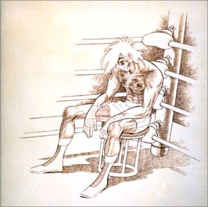
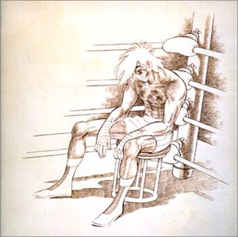

[已完結] 【DRYH+HR】【非官方酒吧團】金銀雙匙的幻境臨摹
玄子 小學部黃綾生
| 451☆大中小簡繁發表於 7-29-2012 10:50 AM 只看該作者 |
| 玄子 小學部黃綾生
| 451☆大中小簡繁發表於 7-29-2012 10:50 AM 只看該作者 引用:女子摀住雙耳，再度四處亂飛，沿途不住尖叫。 引用:哈絲默爾順手將懷中的三瓶迷幻藥拋給了自己的隊友──「神賜的甘泉──何妨宴請敵人？讓其受邀瘋狂褻瀆的遠古眾神的擁抱？」 「咱大概懂了……」總之就是用在敵人身上對吧？不過這到底是甚麼？毒藥？ 引用:「……不附上解釋徑自逃離不是淑女的應有行為哦。」 引用:「一邊隱形、一邊尖叫，這不是擺明要透出自己位置嗎？」孟斯特攤開手，搖著頭笑道。此舉似乎也是在給同伴們攻擊方向的提示。 玄子 (玄子)的「辨認女僕所在的方向」擲了「3 d 6 + 0」，擲出「1、6、1」，總合為「8」。 玄子的眼神帶點挑釁。 「其實咱比較想扔酒瓶唄。」說是這樣說，他還是衝到吧檯上舉起椅子往女僕的方向扔去。 玄子 (玄子)的「舉起椅子扔女撲(?)」擲了「3 d 6 + 0」，擲出「2、1、3」，總合為「6」。 - 場外： 骰神  你回來了 你回來了 |
北楼真茂 小學部藍綵生
| 452☆大中小簡繁發表於 7-29-2012 01:58 PM 只看該作者  引用:兩人回頭望向懸空的黑布，只見一名女僕的身影隨之出現在黑布所圍繞之處，跪在奧茲與吉坦之間。 吉坦帶著疑惑的眼神看著圖坦理雅爾，但覺得目前只能相信他了。 引用:隨著吉坦以黑布將透明人縛住，奧茲將手掌按在盒子上的按鈕，蓋子的內壁隨即清空，面板上的「潰敗」二字同時變成亮紫色。 引用:「我戀愛了……」奧茲丟下這句話，一臉傻笑，失魂落魄地朝那女子走了幾步。 吉坦把視線轉回機關上，此時機關上的方塊已經不見了，當吉坦還在思考這東西的運作方式的時候，發現手上的字條也有些許變化。 「嗯……」吉坦思考了一下，「既然這樣的話，那也用一樣的方法解決吧！」 吉坦便再把機關上頭的「殲滅」按鈕按了下去，之後一口氣衝到被奧茲抱住的女子前方，第一拳便直接朝臉上送了一個正拳！ 吉坦。戴斯 (北楼真茂)的「【習得異能：近身搏擊】+【鐵指虎】」 擲了「5 d 6 + 0」 ，擲出「5、1、1、1、3」。 ===================場外 情けない男、ジダン！ |
wesly 小學部白緞生
| 453☆大中小簡繁發表於 7-29-2012 10:42 PM 只看該作者 引用:原文由 MADAO 於 7-29-2012 01:29 AM 發表 「清醒點！軍裝少女難道會比女僕差！？」她大聲吼叫，接著扭奧茲的耳朵試著把他移走，如同強勢女兒教訓喝醉的爸爸一般。 為了能讓奧茲轉移他的注意力，她決定犧牲自己的色相。於是紗姬接著順勢摟住他的脖子，用妖媚(?)的眼神看著奧茲。 「而且，奧茲叔叔……這樣子亂來的行為只有我才可以對你做喔~~♥。」還不時用另一隻手撫摸奧茲的左臉頰。 |
| Edward_Knave 以「書記」自稱者  初等部藍綵生
| 454☆大中小簡繁發表於 7-30-2012 01:20 AM 只看該作者 【系統提示】「神秘女僕」席拉擊敗確認(總傷10，理念值傷害10)。 ～～～～～～～ 第一章 隱伏的怪力亂神
判定結算(若不使用希望標記)：神秘女僕HP-6，皮爾諾反應消滅，絕望標記+3
～～～～～～～～～～～～ 四人組：皮爾諾、孟斯特、玄子、哈絲默爾
引用:他首先躲進最近的桌底，好讓敵人難以攻擊。「破軍擒將……只比大勝克敵差一點而已啊。」孟斯特笑著自語，思考為何請糧益兵後面接著破軍擒將，並試圖把藍色的玻璃棒換成橘色的。 橘光普照，女僕的身影再現，這一次就是半藍半紫的波浪形長髮，背部的衣料佈滿菱形鏤空，裙子就是右側開叉的黑色長裙。 引用:「……不附上解釋徑自逃離不是淑女的應有行為哦。」 輓歌被點上憤怒的火焰，使得皮爾諾受到怒氣的反噬，無法奏出純淨的意境，死亡之戀被帶上恨意，信服力自是打了折扣。 ＜反應消滅不會影響皮爾諾接下來的行動。＞ 引用:玄子的眼神帶點挑釁。 再加上敏銳的感知，玄子的弱小形象彷彿蕩然無存。 鎮魂的悲憤與徘徊於死亡威脅的身體將力量增幅至足以實現玄子所知的理想處境－－在女僕的身影低飛越過大廳之時，玄子所扔出的木椅直接打中女僕的身體，並將之擊落。 女僕一言不發，身影再度憑空消散，只賸下一堆藍與紫的閃爍粉末，隨著氣流飄往八面體收納器上，赤道的其中一角。 只見有紫氣流動的管道被同一堆閃躲的粉末完全填滿，中央核心裡另外六分之一的面積也被染上了閃爍的藍色，對應的頂點上的弧狀凹穴出現了一顆半藍半紫的半透明寶石，寶石周邊被覆以藍色的薄霧。 引用:「您是指──這樣的物體嗎？」哈絲默爾嘻笑著從懷中抽出七條玻璃條：「哈哈、無妨，果然──這樣的技倆是逃不過汝等異教守門人的時空之感？庭達羅斯的穢物啊──看來，是否能改日請教？」 哈絲默爾隱約可以發現消災人形本來柔弱的聲音變得更為柔弱了，似乎是無法如常應對異教領袖的誇讚之故。 「吾等為此地之人所製，自有身於此地之命。 另，何謂『庭達羅斯』？」 在桌上的破財人形看著消災人形的反應，隨即笑道，並向哈絲默爾提問。 「做得好。『感知情報』的紕漏已經成功收服。接下來就是……」 就在圖託理雅爾報捷之際，一聲鳴響打斷了他的發言。 皮爾諾所知 皮爾諾可以發現鳴響的音高有規律的變動，來自倉庫與職員室之間的鳴響在高音的時候比低音時響亮。 他從高音的鳴響感到了人類的驚慌，從低音的鳴響感到了非人的友善。 孟斯特所知 孟斯特可以發現鳴響的音高有規律的變動，來自倉庫與職員室之間的鳴響在高音的時候比低音時響亮。 他發現了這段鳴響有兩個不同的聲音來源。 玄子所知 玄子可以發現鳴響的音高有規律的變動，來自倉庫與職員室之間的鳴響在高音的時候比低音時響亮。 同時，他能夠從鳴響中感知兩種不同的氣息，其中一種持續而穩定，另一種則時有間斷，並與鳴響的音高變動規律一致。 哈絲默爾所知 哈絲默爾可以發現鳴響的音高有規律的變動，來自倉庫與職員室之間的鳴響在高音的時候比低音時響亮。 在鳴響之中，哈絲默爾發現令他聯想到深潛者的氣息持續存在，以及另一股時現時消的人類氣息。 ＜場外發言：孟斯特的迴避動作讓我想起了刺塔的反射動作……(掩面笑)＞ 三人組：奧茲．梁、奈良原紗姬、吉坦．戴斯
引用:「我戀愛了……」奧茲丟下這句話，一臉傻笑，失魂落魄地朝那女子走了幾步。 如果老公在這裡，我不知道您會不會有危險，所以還是……」 女僕在被奧茲抱住之後，隨即斬釘截鐵的拒絕。就在這時－－ 引用:「唉~~！」紗姬搖了搖頭，接著她取出手槍將其反轉，先勒住奧茲的脖子再用槍托朝他的頭用力敲下去！ 引用:「嗯……」吉坦思考了一下，「既然這樣的話，那也用一樣的方法解決吧！」 面板上並沒有可見的變化，但是接下來的結果比較重要。 吉坦的正拳一送，女僕隨即應聲倒下，無從再起。 同時，面板上所有的白字同時變色。
就在這時，只見女僕的身影再度憑空消散，只賸下一堆藍與紫的閃爍粉末，隨著氣流飄往大廳。 「做得好。『感知情報』的紕漏已經成功收服。接下來就是……」 就在圖託理雅爾報捷之際，一聲鳴響打斷了他的發言。 奧茲所知 依據音樂知識與聆聽音樂的經驗，奧茲可以分析出鳴響由兩種不同頻率的正弦音波組成。 來自正下方的低音部分持續放出；較高音的部分則間歇釋出，來自下方偏向吧檯的位置。 紗姬所知 紗姬可以發現鳴響的音高有規律的變動，來自下方的鳴響在高音的時候比低音時響亮。 她在高音的鳴響當中彷彿感到一種熟悉的感覺。 吉坦所知 吉坦可以發現鳴響的音高有規律的變動，來自下方的鳴響在高音的時候比低音時響亮。 同時，他發現了這鳴響由兩種位置不同的聲音組成。 ＜場外發言：可惡。我應該用「教訓」還是「調教」描述紗姬對奧茲的行動才對？(掩面笑)＞ ～～～～～～～～ 四人組：一樓平面圖(如有錯誤請提出更正) ┌───┬───┬──┬────┬───┬──┬───┬──┬─────────────┬─┬──┬────────────────┐ │╲ │ ╱│██│ │ │ │□□│◆ ◆ ◆ ◆ │ │██│ │ │ ╲ │ ╱ │██│ │ │ │□ └─────────────┘ │██│ ╭───╮ │ │ ╲│╱ │██├ ──┤ │ ├───┤□ │██│ ╭╭───╮╮ │ ├───█───┤██│ │ │ │□ ┌─────────────┐ │██│ ││╭─╮││ │ ├───┼───┤██│ │ │□ │ ◇ │ │██│ │││ │││ │ ├───┼───┤██│ │ │ │□ │ │ │██│ ││╰─╯││ │ ├───┼───┼──┼ ──┴───┘ └┬──┤□ └─────────────┘ └──┘ ╰╰───╯╯ │ ├───┼───┤┌┐│ │┌┐│□ │ ╰───╯ │ ├───┼───┤│││ ││││□ ┌─────────────┐ │ │ ├───┼───┤└┘│ │└┘│□□│◆ ◆ ◆ ◆ │ │ │ ├───┼───┴──┴───………………┬┬┬┼┬┬┼──┼───佈───告───欄─┼─┬──┴────── │ ├───┤ │││││││ └───────────────┘ │ │ │ │││││││ │ │ │ │││││││ │ │ █────────────────█┴┴┴┴┴█ δ │ │ │ │ ╭─╮ │ │ ○ ○ α │ │ ┌──┤ │ ╭───╮ │ │ │ │ │ │ │ ○│ │ │ │ │ ○ ○ ○ ○ ○ ○ ╰───╯ ○ │ │ │ │ │ ╭───╮ ╭───╮ ╭───╮ ○ ○ ◎ ○│ │ │ │ │ │ │ │ │ │ │ │ │ │ ╰───╯ ╰───╯ ╰───╯ │ │ ○│ │ 大 ○ ○ ○ ○ ○ ○ ○ ○ ○ ○ │ │ │ │ ╭───╮ ╭───╮ ○ ○│ │ │ │ 門 │ │ ☆ │ │ │ │ │ │ ╰───╯ ╰───╯ γ │ │ │ │ ○ ○ ○ ○ ○ ○ ○ ○ ○ ○ │ │ │ │ │ ╭───╮ ╭───╮ ╭───╮ ○│ │ │ │ │ │ │ │ │ │ │ │ │ │ │ │ ╰───╯ ╰───╯ ╰───╯ ○ ○ ○│ │ │ │ │ ○ ○ ○ ○ ○ ○ ╭───╮ │ │ │ │ │ │ β│ ○│ │ │ │ │ ╰───╯ │ │ │ │ │ ○ ○ ○│ │ │ │ │ │ │ │ │ │ ╭─┬─╮ ○│ │ │ │ │ █───────────────█┬┬┬┬┬█ │╲│╱│ ├─┤ │ │ │ │ │││││││ ├─┼─┤ ╭─╯ │ │ │ │ │ │││││││ │╱│╲│ ╭─┤ │ │ │ ├───┤ │││││││ ╰─┴─╯╭┬╯█╰╮ │ │ │ ├───┼───┬──────── ┼┴┴┴┴┴┴─ ┬ ──────────────┬╯╰╮██│ │ │ │ ├───┼───┤□□□□※※ │□※※ │ │ │█╭╯ │ │ │ ├───┼───┤□□□□※※ │□※※ │ │ ╰─╯ │ │ │ ├───┼───┼──┐□※※ │□※※ ╭ ╮ │ ┌──┼────────┘ │ │ ├───┼───┤██│□※※ │□※※ │ │ │ │██│ │ │ ├───┼───┤██│□※※ │□※※ ╰─╯ │ │██│ │ │ ├───┼───┤██│□※※ │□※※ │ │██│ │ │ ├───█───┤██│□※※【〔※〕】│□※※ │ │██│ │ │ │ ╱│╲ │██│□※※※※※※※※※※※※※※※※※※│ │██├─────────────┘ │ │ ╱ │ ╲ │██│□※※※※※※※※※※※※※※※※※※│ │██│ │ │╱ │ ╲│██│□□□□□□□□│□□□□□□□□□□│ │██│ │ └───────┴──┴────────┴──────────┴──────────────┴──┴────────────────┘ α：皮爾諾 β：孟斯特 γ：玄子 δ：哈絲默爾 ◎：圖託理雅爾 ★：神秘女僕 ◇：鐵盒 ☆：收納器 四人組：二樓平面圖(如有錯誤請提出更正) ┌───┬───┬─┬─────┬────┬───┬────┬───┬────┬───┬───┬─┬──┬──┬──────────┐ │╲ │ ╱│ │ │ ╲╱ │ │ ╲╱ │ │ ╲╱ │ │ │□│ │ │ │ │ ╲ │ ╱ │ │○ │ ╱╲ ├───┤ ╱╲ ├───┤ ╱╲ ├───┤ │□│ │ │ │ │ ╲│╱ │ │ └────┤ ○ └────┤ ○ └────┤ ○ └──┬┴─┤ │ │ │ ├───█───┼─┴┐ │ │ │ │██│ │ │ │ ├───┼───┤██├───┐ │ │ │ │██├ ┴ ┤ │ ├───┼───┤██│ │ ├──┐ ├──┐ │ │██│ │ │ ├───┼───┤██│ │ │ │ │ │ │ │██│ │ │ ├───┼───┤██│ │ │ │ │ │ │ ┌───┤██│ ┌──┤ │ ├───┼───┤██├───┤ ├──┤ ├──┤ │ │╲ ╱│██│ │ │ ├───┼───┤██│（□）│ │□□│ │□□│ │ │╱ ╲│██│ │ │ ├───┼───┴──┴───┴─── ┼┬┬┼┬┬┐ ┴──┴─── ┴ ┴───┴──┴ ├──┘ │ ├───┤ │││││││ │ │ │ │ │││││││ │ │ │ │ │││││││ │ │ │ █────────────────█┴┴┴┴┴█────────────────────────█ │ │ │ │ │ │ │ │ │ │ │ │ │ │ │ │ │ │ │ │ ２／Ｆ │ │ │ │ │ │ │ │ │ │ │ │ │ │ │ │ │ │ │ │ │ │ │ │ │ │ │ │ █───────────────█┬┬┬┬┬█───────────────█ │ │ │ │││││││ │ │ │ │ │││││││ │ │ ├───┤ │││││││ │ │ ├───┼───┬──┬ ─────┼┴┴┴┴┴┼─┬──┬─────── ┴┬──┬──┐ │ ├───┼───┤██│ │＞＞╳＜＜│□│ │ │＞＜│██│ │ ├───┼───┤██│ ├─────┤□│ │ ├──┤██│ │ ├───┼───┤██│ │ ├─┼──┘ │╲╱│██├────┐ │ ├───┼───┤██│ │ │╳│ │╱╲│██│ │ │ ├───┼───┤██│ ┌─────┬ ──┼─┴────┐ ├──┤██│ │ │ ├───┼───┤██│ │ │ │ │ │＞＜│██│ ──┤ │ ├───█───┼─┬┘ │ │ │ │ ├──┴──┤ │ │ │ ╱│╲ │ │ │ │ │ │ ○ ○ ○ └─────┘ │ │ │ ╱ │ ╲ │ │○ ├─────┤ ├──────┼───────┐ │ │ │ │╱ │ ╲│ │ │（□╳□）│ │（□）（□）│ │ │ │ │ └───────┴─┴───┴─────┴─────┴──────┴───────┴─────────┴──┴───────────┘ 三人組：一樓平面圖(如有錯誤請提出更正) ┌───┬───┬──┬────┬───┬──┬───┬──┬─────────────┬─┬──┬────────────────┐ │╲ │ ╱│██│ │ │ │□□│◆ ◆ ◆ ◆ │ │██│□□│ │ │ │ │ │□□│ │ ╲ │ ╱ │██│ │ │ │□ └─────────────┘ │██│□ ╰──────────╯ □│ │ ╲│╱ │██├ ──┤ │ ├───┤□ │██│ □│ ├───█───┤██│ │ │ │□ ┌─────────────┐ │██│ ╭───────────╮ │ ├───┼───┤██│ │ │□ │ │ │██│ │ │ │ │ │ │ │ │ ├───┼───┤██│ │ │ │□ │ │ │██│ ╰───────────╯ │ ├───┼───┼──┼ ──┴───┘ └┬──┤□ └─────────────┘ └──┘ │ ├───┼───┤┌┐│ │┌┐│□ │ │ ├───┼───┤│││ ││││□ ┌─────────────┐ │ │ ├───┼───┤└┘│ │└┘│□□│◆ ◆ ◆ ◆ │ │ │ ├───┼───┴──┴───………………┬┬┬┼┬┬┼──┼───佈───告───欄─┴─┬──┴────── │ ├───┤ │││││││ └───────────────┘ │ │ │ │││││││ │ │ │ │││││││ │ │ █────────────────█┴┴┴┴┴█ │ │ │ │ ╭─╮ │ │ ○ ○ │ │ ┌──┤ │ ╭───╮ │ │ │ │ │ │ │ ○│ │ │ │ │ ○ ○ ○ ○ ○ ○ ╰───╯ ○ │ │ │ │ │ ╭───╮ ╭───╮ ╭───╮ ○ ○│ │ │ │ │ │ │ ◇│ │ │ │ │ │ │ ╰───╯ ╰───╯ ╰───╯ ○│ │ │ │ 大 ○ ○ ○ ○ ○ ○ ○ ○ ○ ○ │◆│ │ │ ╭───╮ ╭───╮ ○│ │ │ │ 門 │ │ ☆ │ │ │ │ │ │ ╰───╯ ╰───╯ ○│ │ │ │ ○ ○ ○ ○ ○ ○ ○ ○ ○ ○ │ │ │ │ │ ╭───╮ ╭───╮ ╭───╮ ○│ │ │ │ │ │ │ │ │ │ │ │ │ │ │ │ ╰───╯ ╰───╯ ╰───╯ ○ ○ ○│ │ │ │ │ ○ ○ ○ ○ ○ ○ ╭───╮ │ │ │ │ │ │ │ ○│ │ │ │ │ ╰───╯ │ │ │ │ │ ○ ○ ○│ │ │ │ │ │ │ │ │ │ ╭─┬─╮ ○│ │ │ │ │ █───────────────█┬┬┬┬┬█ │╲│╱│ ├─┤ │ │ │ │ │││││││ ├─┼─┤ ╭─╯ │ │ │ │ │ │││││││ │╱│╲│ ╭─┤ │ │ │ ├───┤ │││││││ ╰─┴─╯╭┬╯█╰╮ │ │ │ ├───┼───┬──────── ┼┴┴┴┴┴┴─ ┬ ──────────────┬╯╰╮██│ │ │ │ ├───┼───┤ │ │ │ │█╭╯ │ │ │ ├───┼───┤ │ │ │ ╰─╯ │ │ │ ├───┼───┼──┐ │ │ ┌──┼────────┘ │ │ ├───┼───┤██│ │ │ │██│ │ │ ├───┼───┤██│ │ │ │██│ │ │ ├───┼───┤██│ │ │ │██│ │ │ ├───█───┤██│ │ │ │██│ │ │ │ ╱│╲ │██│ │ │ │██├─────────────┘ │ │ ╱ │ ╲ │██│ │ │ │██│ │ │╱ │ ╲│██│ │ │ │██│ │ └───────┴──┴────────┴──────────┴──────────────┴──┴────────────────┘ ◇：鐵盒 ☆：收納器 三人組：二樓平面圖(如有錯誤請提出更正) ┌───┬───┬─┬─────┬────┬───┬────┬───┬────┬───┬───┬─┬──┬──┬──────────┐ │╲ │ ╱│ │ │ ╲╱ │ │ ╲╱ │ │ ╲╱ │ │ │□│ │ │ │ │ ╲ │ ╱ │ │○ │ ╱╲ ├───┤ ╱╲ ├───┤ ╱╲ ├───┤ │□│ │ │ │ │ ╲│╱ │ │ └────┤ ○ └────┤ ○ └────┤ ○ └──┬┴─┤ │ │ │ ├───█───┼─┴┐ │ │ │ │██│ │ │ │ ├───┼───┤██├───┐ │ │ │ │██├ ┴ ┤ │ ├───┼───┤██│ │ ├──┐ ├──┐ │ │██│ │ │ ├───┼───┤██│ │ │ │ │ │ │ │██│ │ │ ├───┼───┤██│ │ │ │ │ │ │ ┌───┤██│ ┌──┤ │ ├───┼───┤██├───┤ ├──┤ ├──┤ │ │╲ ╱│██│ │ │ ├───┼───┤██│（□）│ │□□│ │□□│ │ │╱ ╲│██│ │ │ ├───┼───┴──┴───┴─── ┼┬┬┼┬┬┐ ┴──┴─── ┴ ┴───┴──┴ ├──┘ │ ├───┤ │││││││ │ │ │ │ │││││││ │ │ │ │ │││││││ │ │ │ █────────────────█┴┴┴┴┴█────────────────────────█ │ │ │ │ │ │ │ │ │ │ │ │ │ │ │ │ │ │ │ │ ２／Ｆ │ │ │ │ │ │ │ │ │ │ │ │ │ │ │ │ │ │ │ │ │ │ │ │ │ │ │ │ █───────────────█┬┬┬┬┬█───────────────█ │ │ │ │││││││ │ │ │ │ │││││││ │ │ ├───┤ ◎ │││││││ │ │ ├───┼───┬──┬ ─────┼┴┴┴┴┴┼─┬──┬─────── ┴┬──┬──┐ │ ├───┼───┤██│ │＞＞╳＜＜│□│ │ │＞＜│██│ │ ├───┼───┤██│ η ├─────┤□│ │ ├──┤██│ │ ├───┼───┤██│ │ ├─┼──┘ │╲╱│██├────┐ │ ├───┼───┤██│ │ │╳│ │╱╲│██│ │ │ ├───┼───┤██│ ┌─────┬ ──┼─┴────┐ ├──┤██│ │ │ ├───┼───┤██│εζ│ │ │ │ │＞＜│██│ ──┤ │ ├───█───┼─┬┘ │ │ │ │ ├──┴──┤ │ │ │ ╱│╲ │ │ │ │ │ │ ○ ○ ○ └─────┘ │ │ │ ╱ │ ╲ │ │○ ├─────┤ ├──────┼───────┐ │ │ │ │╱ │ ╲│ │ │（□╳□）│ │（□）（□）│ │ │ │ │ └───────┴─┴───┴─────┴─────┴──────┴───────┴─────────┴──┴───────────┘ ε：奧茲．梁 ζ：奈良原紗姬 η：吉坦．戴斯 ◎：圖託理雅爾 ★：隱形女子 場外發言：今天去了遊行，所以晚了回文。雖然我在遊行的途中撇了一張圖就是……(掩面)(眾毆) 場外更新：話說兩邊的主題分別是「愛」與「怒」，讓我想起了魔法爆裂規則裡的「魔」、「愛」、「怒」三種技能範疇…… 回應： MADAO - ……如果我沒看到蔓蔓的酒吧完工圖(Minecraft)，我並不會有可能知道席拉已經結婚了……(掩面) (第五十六帖：無常之心) [ Edward_Knave 於 7-31-2012 06:27 PM 重新編輯過 ] | |||||||||||||||||||||||||||||||||||||||||||||||||||||||||||||||||||||||||||||||||||||||||||||||||||||||||||||||||||||||||||||||||||||||||||||||
| 藍刺蝟 掛機刺蝟娘  新手輔導員
| 455☆大中小簡繁發表於 7-30-2012 02:51 PM 只看該作者 引用:孟斯特置換玻璃棒，盒子隨即放出橘色的強光照遍大廳。 引用:在怒氣之下，皮爾諾的鎮魂歌被染上了一點異常的色彩，而不是純粹的喪慟。 引用:皮爾諾的伴奏雖然沒辦法重現死亡的意境，倒為玄子的士氣帶來了數分的增長。 引用:「哪裡……我只是可以探測同類氣息存在的模擬機體而已……」 引用:孟斯特可以發現鳴響的音高有規律的變動，來自倉庫與職員室之間的鳴響在高音的時候比低音時響亮。 真是……讓人無法認真起來的戰鬥啊。 跟執事比起來，這真是場不像戰鬥的戰鬥。 「接著來去下一個吧……」偵探看了一眼收納器，接著眼神飄往倉庫－－ －－那詭異的鳴響，激起他的笑容。 「有趣。」他念道，接著再度前往職員室。此次偵探特別注意之前觀察到的瓶子、齒輪、以及牆壁等物件上有無字跡。 －－－－－－場外線 若有擲骰必要，請告知我。 另外，哈茲默爾的迷幻藥被孟斯特丟回去了（上回合）XD 記得接 關於GM給各角色聽到的內容，應該是與角色設定有關。玄子會感應、哈茲默爾的克蘇魯神話知識……如果要給皮爾諾特別的內容，可否請GM也給孟斯特符合偵探角色的內容（也不能說偵探是正常人做的事啊）？？XD （GM：  回GM：厲害，還真的給了XD [ 藍刺蝟 於 7-30-2012 03:21 PM 重新編輯過 ] |
Hazmole 新手輔導員
| 456☆大中小簡繁發表於 7-30-2012 03:00 PM 只看該作者 引用:「還是你自己去用吧。」偵探順手接了哈茲默爾拋來的玻璃棒，又施展了高難度的特技將接踵而來的迷幻藥接拋回去，「雖然你比較需要鎮定劑。」拿到解謎關鍵的孟斯特沒多費心思去創作毒電波好迎合哈茲默爾。 引用:「哪裡……我只是可以探測同類氣息存在的模擬機體而已……」 說著將消災人偶放到肩上，用奇異的語調回覆破財人偶：「『庭達羅斯』──嘿，那是妄圖挑戰時間禁忌之人最不願聽到的聲音──」哈絲默爾的眼睛閃閃發光，像是在回憶什麼往事一般。 引用:哈絲默爾可以發現鳴響的音高有規律的變動，來自倉庫與職員室之間的鳴響在高音的時候比低音時響亮。 ──是啊，貿然行動是多麼的危險啊？ [ Hazmole 於 7-30-2012 07:59 PM 重新編輯過 ] |
| 凱琳 「傍観者」  初等部白緞生
| 457☆大中小簡繁發表於 7-30-2012 04:52 PM 只看該作者 引用:原文由 Edward_Knave 於 7-30-2012 01:20 AM 發表 一邊理了理黑色手套，一邊以淡漠的眼神看向消散的粉末。 「致予，深切的哀悼。」 引用:原文由 藍刺蝟 於 7-30-2012 02:51 PM 發表 「從戰鬥開始就不知所蹤的您沒有說這句話的資格。」 引用:原文由 Edward_Knave 於 7-30-2012 01:20 AM 發表 別抱怨，剛剛那場戰鬥已經令狀況愈來愈差了。 皮爾諾皺眉，向鳴響的源頭走去。 曲葬不能再用太多次……。 －－ 不埃爾諾斯你給我回去！（驚）還沒到你出場的時候！  |
MADAO 小學部白緞生
| 458☆大中小簡繁發表於 7-30-2012 06:32 PM 只看該作者 引用:原文由 Edward_Knave 於 7-30-2012 01:20 AM 發表 引用:原文由 wesly 於 7-29-2012 10:42 PM 發表 剛說完，便見吉坦朝著黑衣女僕臉上灌了一拳，將之撂倒在地。 奧茲心碎、心驚、心慌、心急如焚，情急下連忙出聲阻止：「不要打我的真心人啊！」 可惜，晚了一步。 引用:原文由 Edward_Knave 於 7-30-2012 01:20 AM 發表 「如果有下輩子，我希望可以變成一塊豆乾……」淚眼汪汪地回頭看了紗姬一眼，哀怨地說。 引用:原文由 Edward_Knave 於 7-30-2012 01:20 AM 發表 愣愣地舉起手指向門外：「低音聽起來來自樓下的房間，高音比較偏近吧檯位置一些。大概是下一個機關吧……」 姑且盡完情報分享的本分，接著，便看著門口發呆，不再說話。 生涯通算第三百六十五次失戀，純情男子漢奧茲，在這一刻燃燒殆盡。   -- 大叔持續崩壞中。 是說席拉到底長什麼樣子啊？有圖嗎？酒吧的員工介紹沒有看到  聲望： Edward_Knave：了解~修改了一點點內文~ Hazmole：萬一接著老公有出場的話就會燃起奧茲的戰意，以NTR為大義掀起聖戰(嗯？) 不過她老公是誰啊？ 玄子：那是小拳王的圖啦，只是撿來用而已  [ MADAO 於 7-30-2012 09:13 PM 重新編輯過 ] |
| 北楼真茂 小學部藍綵生
| 459☆大中小簡繁發表於 7-30-2012 08:10 PM 只看該作者 引用:為了能讓奧茲轉移他的注意力，她決定犧牲自己的色相。於是紗姬接著順勢摟住他的脖子，用妖媚(?)的眼神看著奧茲。 引用:吉坦的正拳一送，女僕隨即應聲倒下，無從再起。 引用:「做得好。『感知情報』的紕漏已經成功收服。接下來就是……」 引用:奧茲看了圖託理雅爾一眼，哀莫大於心死，沉浸於失戀的傷痛之中，無心感受勝利的喜悅。 「……既然知道在哪裡就快動身吧，」吉坦走到奧茲身邊，趁他身的顏色還沒褪光之前用力拍了他的背，「走啦！」 還沒等兩人開始動作，吉坦便直接走出房門，先看了看酒吧大廳中有沒有發生什麼變化，之後不急不徐的走下了二樓，往奧茲所說的房間走去，站在門前。 ＝＝＝＝＝＝＝＝＝＝＝＝場外 啊哈哈哈你看看你你看看你☜(ﾟ∀ﾟ(ﾟ∀ﾟ☜) [ 北楼真茂 於 7-30-2012 08:13 PM 重新編輯過 ] |
| wesly 小學部白緞生
| 460☆大中小簡繁發表於 7-30-2012 08:51 PM 只看該作者 引用:原文由 MADAO 於 7-30-2012 06:32 PM 發表 引用:原文由 北楼真茂 於 7-30-2012 08:10 PM 發表 「吉坦，你先走！我來處理這個落魄又失神的傢伙就好了……。」 紗姬身為流浪傭兵行走天涯數十年，要說她能安撫各式各樣的男人(包括正太)的人，她大概是唯一一個。 「對於這種落魄的大叔……大概只能用那招了……。」 接著紗姬冷不防的對著奧茲吻了下去，試圖給奧茲一些希望。 |
| MADAO 小學部白緞生
| 461☆大中小簡繁發表於 7-30-2012 09:32 PM 只看該作者 引用:原文由 北楼真茂 於 7-30-2012 08:10 PM 發表 引用:原文由 wesly 於 7-30-2012 08:51 PM 發表 然後…… 「妳妳妳、妳怎麼偷親人家啦！犯規啦！不算啦！我、我嫁不出去了啦──嗚哇啊啊啊！！！」像個小女生般一邊嚷嚷，一邊哭著飛奔跑出房間，跟在吉坦身後下到一樓，來到發出聲響的房間外。 兩行清淚，顫抖的右手摸向自己唇角，低聲囁嚅：「也、也不先問一聲，人家、人家還是第一次的說……」 -- もう……お婿に行けない……(′；ω；‵)グスン 為什麼萌點擔當是位大叔啦，整個怪怪的啊，不蘇胡XD [ MADAO 於 7-30-2012 09:33 PM 重新編輯過 ] |
| 藍刺蝟 掛機刺蝟娘 新手輔導員
| 462☆大中小簡繁發表於 7-30-2012 09:55 PM 只看該作者 引用:青年只是用冷淡的語氣及與之矛盾的用詞開口。 「你大概不知道，」偵探用手指著對方，「如果我不在場，你大概連觀眾小姐在哪都看不到。」他早已發現黑盒子跟席拉身形顯現與否的關聯。 說完這句話，他繼續朝職員室走去（接455樓後半） －－－－－－場外線 礙於角色個性，我必須補充這句話XD 然後關於席拉的年紀，我很好奇！（之前酒吧GM的描寫類似於「冰靈的少女聲突然出現在背後，但看不見實體」XD 所以是少女（？ [ 藍刺蝟 於 7-30-2012 09:57 PM 重新編輯過 ] |
| Edward_Knave 以「書記」自稱者 初等部藍綵生
| 463☆大中小簡繁發表於 7-31-2012 12:11 AM 只看該作者 第一章 隱伏的怪力亂神
～～～～～～～～～～～～ 四人組：皮爾諾、孟斯特、玄子、哈絲默爾 不消一分鐘，鳴響漸漸消減。 引用:皮爾諾皺眉，向鳴響的源頭走去。 皮爾諾發現了人類的氣息來自職員室、非人的氣息來自倉庫。 隨著孟斯特走進職員室，皮爾諾從門外看見職員室裡有一個兩端尖細、中間寬闊的石製水瓶懸在水管一端的正下方一尺位置，背後就有大量生鏽的鐵製齒輪排在牆前。 引用:「『同為瘋狂，終能相認』──那混亂的戲劇之言在黃衣之王豈不是如此記載？」哈絲默爾嘻嘻笑著回應消災人偶：「──果真如此嗎？吾輩仍非那令人髮指的瘋狂之物？哈哈、無妨、無妨，這樣的自不量力豈非又是一種愚痴盲目？」 哈絲默爾待機之時，消災人形立刻順勢追問。 「聽爾所言，爾當知趣聞無數，誤算悉數平靖過後，可否詳談？」 金色的破財人偶看著哈絲默爾的雙眼，隨即提出請求。 引用:「嗯？這樣就完了？」在桌底的孟斯特發現戰鬥的終結，馬上爬了出來，並把黑盒子和玻璃條放在桌上，「與其說是打鬥，不如說是音樂會呢？」他看著皮爾諾說道。 職員室的佈置依然不變，仍然是一個兩端尖細、中間寬闊的石製水瓶懸在水管一端的正下方一尺位置。大量的齒輪排在背後，與倉庫的齒輪陣相連為一。 這一次，他發現了職員室裡的齒輪陣佈上了不同的筆畫，依照孟斯特的推算，當齒輪轉到一定的角度，似乎就能使得筆畫對齊。 「其中兩台機關強化了自身的反應。不過這兩台機關…怎麼好像連在一起的樣子……？」 圖託理雅爾走到玄子身旁，提出自身目前所知。 三人組：奧茲．梁、奈良原紗姬、吉坦．戴斯 不消一分鐘，鳴響漸漸消減。 引用:「嗚……這回又是什麼了？」吉坦順便摳了摳耳洞，隱隱感覺到之前那個尖銳的噪音還留在耳朵裡，「少年，剛才那個傢伙感覺跟之前那個蝙蝠男有點像呢，這代表我們解開兩個機關了嘛？」 其餘兩台機關剛才強化了自身的氣息，我目前還在想為何會有這種反應。」 圖託理雅爾向吉坦應道。 引用:紗姬見奧茲還沒醒過來，咳了兩聲以後對著吉坦說道。 引用:奧茲瞪大了眼，瞠目結舌望著紗姬，傻愣愣地怔住。 白色的半身像看見奧茲奪門而出，隨即笑道。 旁邊的圖託理雅爾則是面色微紅，四處張望，表現得有點難為情。 紗姬所知 「其、其實……我真的不需要迴避一下嗎？」 紗姬感覺到圖託理雅爾柔弱的提問不是因為忌諱，也不是因為不想被閃到，而是因為不想妨礙對方。 ～～ 吉坦所知 吉坦發現剛才的鳴響在倉庫與職員室之間發出。 奧茲所知 奧茲發現剛才的鳴響當中，高音的鳴響與職員室對應，低音的鳴響則與倉庫的對應。 ～～～～～～～～ 四人組：一樓平面圖(如有錯誤請提出更正) ┌───┬───┬──┬────┬───┬──┬───┬──┬─────────────┬─┬──┬────────────────┐ │╲ │ ╱│██│ │ │ │□□│◆ ◆ ◆ ◆ │ │██│ │ │ ╲ │ ╱ │██│ │ │ │□ └─────────────┘ │██│ ╭───╮ │ │ ╲│╱ │██├ ──┤ │ ├───┤□ │██│ ╭╭───╮╮ │ ├───█───┤██│ │ │ │□ ┌─────────────┐ │██│ ││╭─╮││ │ ├───┼───┤██│ │ │□ │ ◇ │ │██│ │││ │││ │ ├───┼───┤██│ │ │ │□ │ │ │██│ ││╰─╯││ │ ├───┼───┼──┼ ──┴───┘ └┬──┤□ └─────────────┘ └──┘ ╰╰───╯╯ │ ├───┼───┤┌┐│ │┌┐│□ │ ╰───╯ │ ├───┼───┤│││ ││││□ ┌─────────────┐ │ │ ├───┼───┤└┘│ │└┘│□□│◆ ◆ ◆ ◆ │ │ │ ├───┼───┴──┴───………………┬┬┬┼┬┬┼──┼───佈───告───欄─┼─┬──┴────── │ ├───┤ │││││││ └───────────────┘ │ │ │ │││││││ │ │ │ │││││││ │ │ █────────────────█┴┴┴┴┴█ δ │ │ │ │ ╭─╮ │ │ ○ ○ │ │ ┌──┤ │ ╭───╮ │ │ │ │ │ │ │ ○│ │ │ │ │ ○ ○ ○ ○ ○ ○ ╰───╯ ○ │ │ │ │ │ ╭───╮ ╭───╮ ╭───╮ ○ ○ ○│ │ │ │ │ │ │ │ │ │ │ │ │ │ ╰───╯ ╰───╯ ╰───╯ │ │ ○│ │ 大 ○ ○ ○ ○ ○ ○ ○ ○ ○ ○ │ │ │ │ ╭───╮ ╭───╮ ○ ○│ │ │ │ 門 │ │ ☆ │ │ ◎ │ │ │ │ ╰───╯ ╰───╯ γ │ │ │ │ ○ ○ ○ ○ ○ ○ ○ ○ ○ ○ │ │ │ │ │ ╭───╮ ╭───╮ ╭───╮ ○│ │ │ │ │ │ │ │ │ │ │ │ │ │ │ │ ╰───╯ ╰───╯ ╰───╯ ○ ○ ○│ │ │ │ │ ○ ○ ○ ○ ○ ○ ╭───╮ │ │ │ │ │ │ │ ○│ │ │ │ │ ╰───╯ │ │ │ │ │ ○ ○ ○│ │ │ │ │ │ │ │ │ │ α ╭─┬─╮ ○│ │ │ │ │ █───────────────█┬┬┬┬┬█ │╲│╱│ ├─┤ │ │ │ │ │││││││ ├─┼─┤ ╭─╯ │ │ │ │ │ │││││││ │╱│╲│ ╭─┤ │ │ │ ├───┤ │││││││ ╰─┴─╯╭┬╯█╰╮ │ │ │ ├───┼───┬──────── ┼┴┴┴┴┴┴─ ┬ ──────────────┬╯╰╮██│ │ │ │ ├───┼───┤□□□□※※ │□※※ β │ │ │█╭╯ │ │ │ ├───┼───┤□□□□※※ │□※※ │ │ ╰─╯ │ │ │ ├───┼───┼──┐□※※ │□※※ ╭ ╮ │ ┌──┼────────┘ │ │ ├───┼───┤██│□※※ │□※※ │ │ │ │██│ │ │ ├───┼───┤██│□※※ │□※※ ╰─╯ │ │██│ │ │ ├───┼───┤██│□※※ │□※※ │ │██│ │ │ ├───█───┤██│□※※【〔※〕】│□※※ │ │██│ │ │ │ ╱│╲ │██│□※※※※※※※※※※※※※※※※※※│ │██├─────────────┘ │ │ ╱ │ ╲ │██│□※※※※※※※※※※※※※※※※※※│ │██│ │ │╱ │ ╲│██│□□□□□□□□│□□□□□□□□□□│ │██│ │ └───────┴──┴────────┴──────────┴──────────────┴──┴────────────────┘ α：皮爾諾 β：孟斯特 γ：玄子 δ：哈絲默爾 ◎：圖託理雅爾 ★：神秘女僕 ◇：鐵盒 ☆：收納器 四人組：二樓平面圖(如有錯誤請提出更正) ┌───┬───┬─┬─────┬────┬───┬────┬───┬────┬───┬───┬─┬──┬──┬──────────┐ │╲ │ ╱│ │ │ ╲╱ │ │ ╲╱ │ │ ╲╱ │ │ │□│ │ │ │ │ ╲ │ ╱ │ │○ │ ╱╲ ├───┤ ╱╲ ├───┤ ╱╲ ├───┤ │□│ │ │ │ │ ╲│╱ │ │ └────┤ ○ └────┤ ○ └────┤ ○ └──┬┴─┤ │ │ │ ├───█───┼─┴┐ │ │ │ │██│ │ │ │ ├───┼───┤██├───┐ │ │ │ │██├ ┴ ┤ │ ├───┼───┤██│ │ ├──┐ ├──┐ │ │██│ │ │ ├───┼───┤██│ │ │ │ │ │ │ │██│ │ │ ├───┼───┤██│ │ │ │ │ │ │ ┌───┤██│ ┌──┤ │ ├───┼───┤██├───┤ ├──┤ ├──┤ │ │╲ ╱│██│ │ │ ├───┼───┤██│（□）│ │□□│ │□□│ │ │╱ ╲│██│ │ │ ├───┼───┴──┴───┴─── ┼┬┬┼┬┬┐ ┴──┴─── ┴ ┴───┴──┴ ├──┘ │ ├───┤ │││││││ │ │ │ │ │││││││ │ │ │ │ │││││││ │ │ │ █────────────────█┴┴┴┴┴█────────────────────────█ │ │ │ │ │ │ │ │ │ │ │ │ │ │ │ │ │ │ │ │ ２／Ｆ │ │ │ │ │ │ │ │ │ │ │ │ │ │ │ │ │ │ │ │ │ │ │ │ │ │ │ │ █───────────────█┬┬┬┬┬█───────────────█ │ │ │ │││││││ │ │ │ │ │││││││ │ │ ├───┤ │││││││ │ │ ├───┼───┬──┬ ─────┼┴┴┴┴┴┼─┬──┬─────── ┴┬──┬──┐ │ ├───┼───┤██│ │＞＞╳＜＜│□│ │ │＞＜│██│ │ ├───┼───┤██│ ├─────┤□│ │ ├──┤██│ │ ├───┼───┤██│ │ ├─┼──┘ │╲╱│██├────┐ │ ├───┼───┤██│ │ │╳│ │╱╲│██│ │ │ ├───┼───┤██│ ┌─────┬ ──┼─┴────┐ ├──┤██│ │ │ ├───┼───┤██│ │ │ │ │ │＞＜│██│ ──┤ │ ├───█───┼─┬┘ │ │ │ │ ├──┴──┤ │ │ │ ╱│╲ │ │ │ │ │ │ ○ ○ ○ └─────┘ │ │ │ ╱ │ ╲ │ │○ ├─────┤ ├──────┼───────┐ │ │ │ │╱ │ ╲│ │ │（□╳□）│ │（□）（□）│ │ │ │ │ └───────┴─┴───┴─────┴─────┴──────┴───────┴─────────┴──┴───────────┘ 三人組：一樓平面圖(如有錯誤請提出更正) ┌───┬───┬──┬────┬───┬──┬───┬──┬─────────────┬─┬──┬────────────────┐ │╲ │ ╱│██│ │ │ │□□│◆ ◆ ◆ ◆ │ │██│□□│ │ │ │ │ │□□│ │ ╲ │ ╱ │██│ │ │ │□ └─────────────┘ │██│□ ╰──────────╯ □│ │ ╲│╱ │██├ ──┤ │ ├───┤□ │██│ □│ ├───█───┤██│ │ │ │□ ┌─────────────┐ │██│ ╭───────────╮ │ ├───┼───┤██│ │ │□ │ │ │██│ │ │ │ │ │ │ │ │ ├───┼───┤██│ │ │ │□ │ │ │██│ ╰───────────╯ │ ├───┼───┼──┼ ──┴───┘ └┬──┤□ └─────────────┘ └──┘ │ ├───┼───┤┌┐│ │┌┐│□ │ │ ├───┼───┤│││ ││││□ ┌─────────────┐ │ │ ├───┼───┤└┘│ │└┘│□□│◆ ◆ ◆ ◆ │ │ │ ├───┼───┴──┴───………………┬┬┬┼┬┬┼──┼───佈───告───欄─┴─┬──┴────── │ ├───┤ │││││││ └───────────────┘ │ │ │ │││││││ │ │ │ │││││││ │ │ █────────────────█┴┴┴┴┴█ │ │ │ │ ╭─╮ │ │ ○ ○ │ │ ┌──┤ │ ╭───╮ │ │ │ │ │ │ │ ○│ │ │ │ │ ○ ○ ○ ○ ○ ○ ╰───╯ ○ │ │ │ │ │ ╭───╮ ╭───╮ ╭───╮ ○ ○│ │ │ │ │ │ │ ◇│ │ │ │ │ │ │ ╰───╯ ╰───╯ ╰───╯ ○│ │ │ │ 大 ○ ○ ○ ○ ○ ○ ○ ○ ○ ○ │◆│ │ │ ╭───╮ ╭───╮ ○│ │ │ │ 門 │ │ ☆ │ │ │ │ │ │ ╰───╯ ╰───╯ ○│ │ │ │ ○ ○ ○ ○ ○ ○ ○ ○ ○ ○ │ │ │ │ │ ╭───╮ ╭───╮ ╭───╮ ○│ │ │ │ │ │ │ │ │ │ │ │ │ │ │ │ ╰───╯ ╰───╯ ╰───╯ ○ ○ ○│ │ │ │ │ ○ ○ ○ ○ ○ ○ ╭───╮ │ │ │ │ │ │ │ ○│ │ │ │ │ ╰───╯ │ │ │ │ │ ○ ○ ○│ │ │ │ │ ε η │ │ │ │ │ ╭─┬─╮ ○│ │ │ │ │ █───────────────█┬┬┬┬┬█ │╲│╱│ ├─┤ │ │ │ │ │││││││ ├─┼─┤ ╭─╯ │ │ │ │ │ │││││││ │╱│╲│ ╭─┤ │ │ │ ├───┤ │││││││ ╰─┴─╯╭┬╯█╰╮ │ │ │ ├───┼───┬──────── ┼┴┴┴┴┴┴─ ┬ ──────────────┬╯╰╮██│ │ │ │ ├───┼───┤ │ │ │ │█╭╯ │ │ │ ├───┼───┤ │ │ │ ╰─╯ │ │ │ ├───┼───┼──┐ │ │ ┌──┼────────┘ │ │ ├───┼───┤██│ │ │ │██│ │ │ ├───┼───┤██│ │ │ │██│ │ │ ├───┼───┤██│ │ │ │██│ │ │ ├───█───┤██│ │ │ │██│ │ │ │ ╱│╲ │██│ │ │ │██├─────────────┘ │ │ ╱ │ ╲ │██│ │ │ │██│ │ │╱ │ ╲│██│ │ │ │██│ │ └───────┴──┴────────┴──────────┴──────────────┴──┴────────────────┘ ε：奧茲．梁 η：吉坦．戴斯 ◇：鐵盒 ☆：收納器 三人組：二樓平面圖(如有錯誤請提出更正) ┌───┬───┬─┬─────┬────┬───┬────┬───┬────┬───┬───┬─┬──┬──┬──────────┐ │╲ │ ╱│ │ │ ╲╱ │ │ ╲╱ │ │ ╲╱ │ │ │□│ │ │ │ │ ╲ │ ╱ │ │○ │ ╱╲ ├───┤ ╱╲ ├───┤ ╱╲ ├───┤ │□│ │ │ │ │ ╲│╱ │ │ └────┤ ○ └────┤ ○ └────┤ ○ └──┬┴─┤ │ │ │ ├───█───┼─┴┐ │ │ │ │██│ │ │ │ ├───┼───┤██├───┐ │ │ │ │██├ ┴ ┤ │ ├───┼───┤██│ │ ├──┐ ├──┐ │ │██│ │ │ ├───┼───┤██│ │ │ │ │ │ │ │██│ │ │ ├───┼───┤██│ │ │ │ │ │ │ ┌───┤██│ ┌──┤ │ ├───┼───┤██├───┤ ├──┤ ├──┤ │ │╲ ╱│██│ │ │ ├───┼───┤██│（□）│ │□□│ │□□│ │ │╱ ╲│██│ │ │ ├───┼───┴──┴───┴─── ┼┬┬┼┬┬┐ ┴──┴─── ┴ ┴───┴──┴ ├──┘ │ ├───┤ │││││││ │ │ │ │ │││││││ │ │ │ │ │││││││ │ │ │ █────────────────█┴┴┴┴┴█────────────────────────█ │ │ │ │ │ │ │ │ │ │ │ │ │ │ │ │ │ │ │ │ ２／Ｆ │ │ │ │ │ │ │ │ │ │ │ │ │ │ │ │ │ │ │ │ │ │ │ │ │ │ │ │ █───────────────█┬┬┬┬┬█───────────────█ │ │ │ │││││││ │ │ │ │ │││││││ │ │ ├───┤ ◎ │││││││ │ │ ├───┼───┬──┬ ─────┼┴┴┴┴┴┼─┬──┬─────── ┴┬──┬──┐ │ ├───┼───┤██│ │＞＞╳＜＜│□│ │ │＞＜│██│ │ ├───┼───┤██│ ├─────┤□│ │ ├──┤██│ │ ├───┼───┤██│ │ ├─┼──┘ │╲╱│██├────┐ │ ├───┼───┤██│ │ │╳│ │╱╲│██│ │ │ ├───┼───┤██│ ┌─────┬ ──┼─┴────┐ ├──┤██│ │ │ ├───┼───┤██│ ζ│ │ │ │ │＞＜│██│ ──┤ │ ├───█───┼─┬┘ │ │ │ │ ├──┴──┤ │ │ │ ╱│╲ │ │ │ │ │ │ ○ ○ ○ └─────┘ │ │ │ ╱ │ ╲ │ │○ ├─────┤ ├──────┼───────┐ │ │ │ │╱ │ ╲│ │ │（□╳□）│ │（□）（□）│ │ │ │ │ └───────┴─┴───┴─────┴─────┴──────┴───────┴─────────┴──┴───────────┘ ζ：奈良原紗姬 ◎：圖託理雅爾 (第五十七帖：兩台機關的合奏) [ Edward_Knave 於 8-2-2012 10:57 PM 重新編輯過 ] | ||||||||||||||||||||||||||||||||||||||||||||||||
| Hazmole 新手輔導員
| 464☆大中小簡繁發表於 7-31-2012 12:52 AM 只看該作者 引用:「黃衣之王嗎……他到底是怎樣的一個人？」 哈絲默爾擺了擺手，對著兩名人偶說道：「何妨聆聽呢？第一章、第二節，那名為『面具』的短篇？」 「Camilla: You, sir, should unmask. Stranger: Indeed? Cassilda: Indeed, it's time. We have all laid aside disguise but you. Stranger: I wear no mask. Camilla: (Terrified, aside to Cassilda.) No mask? No mask!」 哈絲默爾隨即用奇異的語調讀出了那戲曲的內容，但似乎是因為刻意扭曲了發音，這段文字理應帶有的精神污染被詭異的抹消了。 「如呵呢？異界的眾人呦？詳談？那就看那偉大的愚痴盲目之神有無安排我們相遇了。」聳聳肩後，哈絲默爾走到了大廳的桌椅處，拉了張椅子翹腳坐下── ──那麼，接下來該做什麼呢？ 眼睛盯著其餘隊友走入的房間，邪惡無序的瘋子正盤算著，並按下通訊鈕：「如何呢？諸位瘋狂的同伴們？有什麼令人膽寒的發展呢？」 ＝＝＝＝ 認真思考不解謎的話還能幹嘛……繼續煉藥？還是有什麼事好做咧？ |
| 玄子 小學部黃綾生
| 465☆大中小簡繁發表於 7-31-2012 07:58 AM 只看該作者 引用:「其中兩台機關強化了自身的反應。不過這兩台機關…怎麼好像連在一起的樣子……？」 「所以解開的時候要兩個一起解嗎？」 他待在原地等待少年的回答。 引用:皮爾諾皺眉，向鳴響的源頭走去。 |
| 藍刺蝟 掛機刺蝟娘 新手輔導員
| 466☆大中小簡繁發表於 7-31-2012 02:42 PM 只看該作者 引用:不消一分鐘，鳴響漸漸消減。 引用:眼睛盯著其餘隊友走入的房間，邪惡無序的瘋子正盤算著，並按下通訊鈕：「如何呢？諸位瘋狂的同伴們？有什麼令人膽寒的發展呢？」 創作了新的毒電波後，孟斯特沒有花心思去管哈茲默爾是否能接收正確含意，看了會齒輪上的刻痕，接著將之指給一旁的皮爾諾和玄子看：「我想，只要把這些刻痕對齊，又會有個女僕或執事出現了。」 說罷，行動力驚人的他馬上離開了職員室，再度來到倉庫。 該是思考的時候了…… 他右手扶著輪盤，瞇著眼出神。 －－－－－－場外線 好想轉…… |
| 北楼真茂 小學部藍綵生
| 467☆大中小簡繁發表於 7-31-2012 02:44 PM 只看該作者 引用:「妳妳妳、妳怎麼偷親人家啦！犯規啦！不算啦！我、我嫁不出去了啦──嗚哇啊啊啊！！！」像個小女生般一邊嚷嚷，一邊哭著飛奔跑出房間，跟在吉坦身後下到一樓，來到發出聲響的房間外。 引用:吉坦發現剛才的鳴響在倉庫與職員室之間發出。 「……啊，這麼快啊，我還以為應該要更久一點的，玩槍的女人果然都不好搞，」吉坦站在倉庫門前，「嗯～看來剩下的東西就在這兩扇門後面了，你覺得該先開哪個？」 |
| 凱琳 「傍観者」 初等部白緞生
| 468☆大中小簡繁發表於 7-31-2012 03:55 PM 只看該作者 引用:原文由 藍刺蝟 於 7-30-2012 09:55 PM 發表 跟在孟斯特後面的青年回應道。 哦，難得審判大叔那麼不理智。 皮爾諾扶額，看來他在被敵人殺死之前會被塔羅牌煩死。 引用:原文由 Edward_Knave 於 7-31-2012 12:11 AM 發表 引用:原文由 藍刺蝟 於 7-31-2012 02:42 PM 發表 這些東西當－－然是交給我們偉大的偵探先生了。 於是青年只是瞄一眼正在跟上來的玄子，接著就跟上孟斯特的腳步，帶著欠揍的笑容走到一旁，絲毫沒有要幫忙的樣子。 －－ 阿孟別這樣！我本來都想叫諾斯回去了（掩面） [ 凱琳 於 7-31-2012 03:57 PM 重新編輯過 ] |
| MADAO 小學部白緞生
| 469☆大中小簡繁發表於 7-31-2012 06:00 PM 只看該作者 引用:原文由 北楼真茂 於 7-31-2012 02:44 PM 發表 聽著兩間房裡傳出的聲響，邊從懷中掏出早前記下的機關設置圖比對。 傳出高音的房間是職員室，依孟斯特通訊中所言，裡頭有類似貓或者章魚圖樣的機關；隔壁的倉庫則發出低音，裡頭的機關似乎與蜘蛛有關。 比較起來，貓無論如何也比蜘蛛感覺要安全一點；高音鳴響又較低音容易令人煩躁不安。 於是指指職員室：「其實我也不知道該先開哪個，不過可能的話，我想先從這間開始。如何？」 |
| Edward_Knave 以「書記」自稱者 初等部藍綵生
| 470☆大中小簡繁發表於 7-31-2012 08:37 PM 只看該作者 第一章 隱伏的怪力亂神
～～～～～～～～～～～～ 四人組：皮爾諾、孟斯特、玄子、哈絲默爾 孟斯特、皮爾諾所知 引用:說罷，行動力驚人的他馬上離開了職員室，再度來到倉庫。 引用:皮爾諾挑眉。 引用:孟斯特仍能看見一塊佈滿綠色海藻的面板，面板上排著十顆還沒亮起的電燈，五顆紅燈在左，五顆藍燈在右，中間有一個極具光澤的木舵輪，與教人聯想到沉船的面板形成滑稽的對比。 而面板上的刻印則是以「謙」與「滿」兩種態度比喻一種「狀態」。 觀乎齒輪陣與面板相連，齒輪陣又與剛才職員室的水管相連，這兩種參數似乎都牽涉到職員室的機關。 就在孟斯特扶著輪盤的一刻，從職員室傳來了微弱的「喀噠」一聲。 哈絲默爾、玄子所知 引用:「連在一起？」玄子好奇地戳戳圖託理雅爾，想當然他的手穿過了白髮少年的身體。 在解其中一台機關的時候，實際上是在同時解兩台機關。」 圖託理雅爾隨即作出解釋，語氣卻帶有一點的不確定。 引用:「哈哈、看來『黃衣之王』的汙穢之名尚未臨到此間呢──」哈絲默爾乾笑幾聲，聳了聳肩：「戲曲之書，混亂的莎翁，『黃衣之王』──那是褻瀆的傳奇戲曲書！」 「是故此人原貌無異於面具乎？妙哉，妙哉。」金色的破財人偶如此回應哈絲默爾的描述。 引用:「又消失了……」玄子挑眉，跟著皮爾諾走向嗚響的源頭，順便觀察一下周遭的景物。 職員名單則沒有明顯的變化，其中幾行卻變了顏色。
看著玄子接近職員室，圖託理雅爾找了其中一個座位就坐下了。 孟斯特走出職員室，並走進倉庫。 過了一段時間，孟斯特扶著輪盤，職員室裡的石壺雖然忽然傾斜，卻仍舊懸浮在中央，瓶口與水管口依舊對齊。 三人組：奧茲．梁、奈良原紗姬、吉坦．戴斯 紗姬所知 「準備好的話就與奧茲他們會合吧。」白色的半身像向身旁的圖託理雅爾示意，隨即跟隨奧茲與吉坦下樓。 「其…其實……您對奧茲的印象如何？」圖託理雅爾向紗姬提問，行動依舊閃縮，語調仍是羞怯。 奧茲、吉坦所知 引用:還在走下樓梯時，吉坦沒發現奧茲已經跟了過來，還在想說他們還需要多久的時候，吉坦已經站在倉庫的門前了，而下一刻吉坦也發現了奧茲就跟在身後。 引用:奧茲擦擦眼淚，暫時把喪失清白這件事情拋在腦後。 －－對了。您們的平面圖在誰的手上？『導修者』告訴我，您們好像在上面留下了記號…？」 獵戶像飄到奧茲與吉坦之間，並報告自身所感知的結果。 ＜場外發言：如果我沒猜錯，平面圖應該在奧茲的手上。＞ ～～～～～～～～ 四人組：一樓平面圖(如有錯誤請提出更正) ┌───┬───┬──┬────┬───┬──┬───┬──┬─────────────┬─┬──┬────────────────┐ │╲ │ ╱│██│ │ │ │□□│◆ ◆ ◆ ◆ │ │██│ │ │ ╲ │ ╱ │██│ │ │ │□ └─────────────┘ │██│ ╭───╮ │ │ ╲│╱ │██├ ──┤ │ ├───┤□ │██│ ╭╭───╮╮ │ ├───█───┤██│ │ │ │□ ┌─────────────┐ │██│ ││╭─╮││ │ ├───┼───┤██│ │ │□ │ ◇ │ │██│ │││ │││ │ ├───┼───┤██│ │ │ │□ │ │ │██│ ││╰─╯││ │ ├───┼───┼──┼ ──┴───┘ └┬──┤□ └─────────────┘ └──┘ ╰╰───╯╯ │ ├───┼───┤┌┐│ │┌┐│□ │ ╰───╯ │ ├───┼───┤│││ ││││□ ┌─────────────┐ │ │ ├───┼───┤└┘│ │└┘│□□│◆ ◆ ◆ ◆ │ │ │ ├───┼───┴──┴───………………┬┬┬┼┬┬┼──┼───佈───告───欄─┼─┬──┴────── │ ├───┤ │││││││ └───────────────┘ │ │ │ │││││││ │ │ │ │││││││ │ │ █────────────────█┴┴┴┴┴█ │ │ │ │ ╭─╮ │ │ ○ ○ │ │ ┌──┤ │ ╭───╮ │ │ │ │ │ │ │ ○│ │ │ │ │ ○ ○ ○ ○ ○ ○ ╰───╯ ○ │ │ │ │ │ ╭───╮ ╭───╮ ╭───╮ ○ ○ ○│ │ │ │ │ │ │ │ │ │ │ │ │ │ ╰───╯ ╰───╯ ╰───╯ │ │ ○│ │ 大 ○ ○ ○ ○ ○ ○ ○ ○ ○ δ │ │ │ │ ╭───╮ ╭───╮ ○ ○│ │ │ │ 門 │ │ ☆ │ │ │ │ │ │ ╰───╯ ╰───╯ │ │ │ │ ○ ○ ○ ○ ○ ○ ○ ○ ○ ○ │ │ │ │ │ ╭───╮ ╭───╮ ╭───╮ ○│ │ │ │ │ │ │ │ │ │ │ │ │ │ │ │ ╰───╯ ╰───╯ ╰───╯ ○ ◎ ○│ │ │ │ │ ○ ○ ○ ○ ○ ○ ╭───╮ │ │ │ │ │ │ │ ○│ │ │ │ │ ╰───╯ │ │ │ │ │ ○ ○ ○│ │ │ │ │ γ │ │ │ │ │ ╭─┬─╮ ○│ │ │ │ │ █───────────────█┬┬┬┬┬█ │╲│╱│ ├─┤ │ │ │ │ │││││││ ├─┼─┤ ╭─╯ │ │ │ │ │ │││││││ │╱│╲│ ╭─┤ │ │ │ ├───┤ │││││││ ╰─┴─╯╭┬╯█╰╮ │ │ │ ├───┼───┬──────── ┼┴┴┴┴┴┴─ ┬ ──────────────┬╯╰╮██│ │ │ │ ├───┼───┤□□□□※※ │□※※ │ │ │█╭╯ │ │ │ ├───┼───┤□□□□※※ │□※※ │ │ ╰─╯ │ │ │ ├───┼───┼──┐□※※ │□※※ ╭ ╮ │ ┌──┼────────┘ │ │ ├───┼───┤██│□※※ │□※※ │ │ │ │██│ │ │ ├───┼───┤██│□※※ α │□※※ ╰─╯ │ │██│ │ │ ├───┼───┤██│□※※ β │□※※ │ │██│ │ │ ├───█───┤██│□※※【〔※〕】│□※※ │ │██│ │ │ │ ╱│╲ │██│□※※※※※※※※※※※※※※※※※※│ │██├─────────────┘ │ │ ╱ │ ╲ │██│□※※※※※※※※※※※※※※※※※※│ │██│ │ │╱ │ ╲│██│□□□□□□□□│□□□□□□□□□□│ │██│ │ └───────┴──┴────────┴──────────┴──────────────┴──┴────────────────┘ α：皮爾諾 β：孟斯特 γ：玄子 δ：哈絲默爾 ◎：圖託理雅爾 ★：神秘女僕 ◇：鐵盒 ☆：收納器 四人組：二樓平面圖(如有錯誤請提出更正) ┌───┬───┬─┬─────┬────┬───┬────┬───┬────┬───┬───┬─┬──┬──┬──────────┐ │╲ │ ╱│ │ │ ╲╱ │ │ ╲╱ │ │ ╲╱ │ │ │□│ │ │ │ │ ╲ │ ╱ │ │○ │ ╱╲ ├───┤ ╱╲ ├───┤ ╱╲ ├───┤ │□│ │ │ │ │ ╲│╱ │ │ └────┤ ○ └────┤ ○ └────┤ ○ └──┬┴─┤ │ │ │ ├───█───┼─┴┐ │ │ │ │██│ │ │ │ ├───┼───┤██├───┐ │ │ │ │██├ ┴ ┤ │ ├───┼───┤██│ │ ├──┐ ├──┐ │ │██│ │ │ ├───┼───┤██│ │ │ │ │ │ │ │██│ │ │ ├───┼───┤██│ │ │ │ │ │ │ ┌───┤██│ ┌──┤ │ ├───┼───┤██├───┤ ├──┤ ├──┤ │ │╲ ╱│██│ │ │ ├───┼───┤██│（□）│ │□□│ │□□│ │ │╱ ╲│██│ │ │ ├───┼───┴──┴───┴─── ┼┬┬┼┬┬┐ ┴──┴─── ┴ ┴───┴──┴ ├──┘ │ ├───┤ │││││││ │ │ │ │ │││││││ │ │ │ │ │││││││ │ │ │ █────────────────█┴┴┴┴┴█────────────────────────█ │ │ │ │ │ │ │ │ │ │ │ │ │ │ │ │ │ │ │ │ ２／Ｆ │ │ │ │ │ │ │ │ │ │ │ │ │ │ │ │ │ │ │ │ │ │ │ │ │ │ │ │ █───────────────█┬┬┬┬┬█───────────────█ │ │ │ │││││││ │ │ │ │ │││││││ │ │ ├───┤ │││││││ │ │ ├───┼───┬──┬ ─────┼┴┴┴┴┴┼─┬──┬─────── ┴┬──┬──┐ │ ├───┼───┤██│ │＞＞╳＜＜│□│ │ │＞＜│██│ │ ├───┼───┤██│ ├─────┤□│ │ ├──┤██│ │ ├───┼───┤██│ │ ├─┼──┘ │╲╱│██├────┐ │ ├───┼───┤██│ │ │╳│ │╱╲│██│ │ │ ├───┼───┤██│ ┌─────┬ ──┼─┴────┐ ├──┤██│ │ │ ├───┼───┤██│ │ │ │ │ │＞＜│██│ ──┤ │ ├───█───┼─┬┘ │ │ │ │ ├──┴──┤ │ │ │ ╱│╲ │ │ │ │ │ │ ○ ○ ○ └─────┘ │ │ │ ╱ │ ╲ │ │○ ├─────┤ ├──────┼───────┐ │ │ │ │╱ │ ╲│ │ │（□╳□）│ │（□）（□）│ │ │ │ │ └───────┴─┴───┴─────┴─────┴──────┴───────┴─────────┴──┴───────────┘ 三人組：一樓平面圖(如有錯誤請提出更正) ┌───┬───┬──┬────┬───┬──┬───┬──┬─────────────┬─┬──┬────────────────┐ │╲ │ ╱│██│ │ │ │□□│◆ ◆ ◆ ◆ │ │██│□□│ │ │ │ │ │□□│ │ ╲ │ ╱ │██│ │ │ │□ └─────────────┘ │██│□ ╰──────────╯ □│ │ ╲│╱ │██├ ──┤ │ ├───┤□ │██│ □│ ├───█───┤██│ │ │ │□ ┌─────────────┐ │██│ ╭───────────╮ │ ├───┼───┤██│ │ │□ │ │ │██│ │ │ │ │ │ │ │ │ ├───┼───┤██│ │ │ │□ │ │ │██│ ╰───────────╯ │ ├───┼───┼──┼ ──┴───┘ └┬──┤□ └─────────────┘ └──┘ │ ├───┼───┤┌┐│ │┌┐│□ │ │ ├───┼───┤│││ ││││□ ┌─────────────┐ │ │ ├───┼───┤└┘│ │└┘│□□│◆ ◆ ◆ ◆ │ │ │ ├───┼───┴──┴───………………┬┬┬┼┬┬┼──┼───佈───告───欄─┴─┬──┴────── │ ├───┤ │││││││ └───────────────┘ │ │ │ │││││││ │ │ │ │││││││ │ │ █────────────────█┴┴┴┴┴█ │ │ │ │ ╭─╮ │ │ ○ ○ │ │ ┌──┤ │ ╭───╮ │ │ │ │ │ │ │ ○│ │ │ │ │ ○ ○ ○ ○ ○ ○ ╰───╯ ○ │ │ │ │ │ ╭───╮ ╭───╮ ╭───╮ ○ ○│ │ │ │ │ │ │ ◇│ │ │ │ │ │ │ ╰───╯ ╰───╯ ╰───╯ ○│ │ │ │ 大 ○ ○ ○ ○ ○ ○ ○ ○ ○ ○ │◆│ │ │ ╭───╮ ╭───╮ ○│ │ │ │ 門 │ │ ☆ │ │ │ │ │ │ ╰───╯ ╰───╯ ○│ │ │ │ ○ ○ ○ ○ ○ ○ ○ ○ ○ ○ │ │ │ │ │ ╭───╮ ╭───╮ ╭───╮ ○│ │ │ │ │ │ │ │ │ │ │ │ │ │ │ │ ╰───╯ ╰───╯ ╰───╯ ○ ○ ○│ │ │ │ │ ○ ○ ○ ○ ○ ○ ╭───╮ │ │ │ │ │ │ │ ○│ │ │ │ │ ╰───╯ │ │ │ │ │ ○ ○ ○│ │ │ │ │ │ │ │ │ │ ╭─┬─╮ ○│ │ │ │ │ █───────────────█┬┬┬┬┬█ │╲│╱│ ├─┤ │ │ │ │ │││││││ ├─┼─┤ ╭─╯ │ │ │ │ │ │││││││ │╱│╲│ ╭─┤ │ │ │ ├───┤ η │││││││ ε ╰─┴─╯╭┬╯█╰╮ │ │ │ ├───┼───┬──────── ┼┴┴┴┴┴┴─ ┬ ──────────────┬╯╰╮██│ │ │ │ ├───┼───┤ │ │ │ │█╭╯ │ │ │ ├───┼───┤ │ │ │ ╰─╯ │ │ │ ├───┼───┼──┐ │ │ ┌──┼────────┘ │ │ ├───┼───┤██│ │ │ │██│ │ │ ├───┼───┤██│ │ │ │██│ │ │ ├───┼───┤██│ │ │ │██│ │ │ ├───█───┤██│ │ │ │██│ │ │ │ ╱│╲ │██│ │ │ │██├─────────────┘ │ │ ╱ │ ╲ │██│ │ │ │██│ │ │╱ │ ╲│██│ │ │ │██│ │ └───────┴──┴────────┴──────────┴──────────────┴──┴────────────────┘ ε：奧茲．梁 η：吉坦．戴斯 ◇：鐵盒 ☆：收納器 三人組：二樓平面圖(如有錯誤請提出更正) ┌───┬───┬─┬─────┬────┬───┬────┬───┬────┬───┬───┬─┬──┬──┬──────────┐ │╲ │ ╱│ │ │ ╲╱ │ │ ╲╱ │ │ ╲╱ │ │ │□│ │ │ │ │ ╲ │ ╱ │ │○ │ ╱╲ ├───┤ ╱╲ ├───┤ ╱╲ ├───┤ │□│ │ │ │ │ ╲│╱ │ │ └────┤ ○ └────┤ ○ └────┤ ○ └──┬┴─┤ │ │ │ ├───█───┼─┴┐ │ │ │ │██│ │ │ │ ├───┼───┤██├───┐ │ │ │ │██├ ┴ ┤ │ ├───┼───┤██│ │ ├──┐ ├──┐ │ │██│ │ │ ├───┼───┤██│ │ │ │ │ │ │ │██│ │ │ ├───┼───┤██│ │ │ │ │ │ │ ┌───┤██│ ┌──┤ │ ├───┼───┤██├───┤ ├──┤ ├──┤ │ │╲ ╱│██│ │ │ ├───┼───┤██│（□）│ │□□│ │□□│ │ │╱ ╲│██│ │ │ ├───┼───┴──┴───┴─── ┼┬┬┼┬┬┐ ┴──┴─── ┴ ┴───┴──┴ ├──┘ │ ├───┤ │││││││ │ │ │ │ │││││││ │ │ │ │ │││││││ │ │ │ █────────────────█┴┴┴┴┴█────────────────────────█ │ │ │ │ │ │ │ │ │ │ │ │ │ │ │ │ │ │ │ │ ２／Ｆ │ │ │ │ │ │ │ │ │ │ │ │ │ │ │ │ │ │ │ │ │ │ │ │ │ │ │ │ █───────────────█┬┬┬┬┬█───────────────█ │ │ │ │││││││ │ │ │ │ │││││││ │ │ ├───┤ ◎ │││││││ │ │ ├───┼───┬──┬ ─────┼┴┴┴┴┴┼─┬──┬─────── ┴┬──┬──┐ │ ├───┼───┤██│ │＞＞╳＜＜│□│ │ │＞＜│██│ │ ├───┼───┤██│ ├─────┤□│ │ ├──┤██│ │ ├───┼───┤██│ │ ├─┼──┘ │╲╱│██├────┐ │ ├───┼───┤██│ │ │╳│ │╱╲│██│ │ │ ├───┼───┤██│ ┌─────┬ ──┼─┴────┐ ├──┤██│ │ │ ├───┼───┤██│ ζ│ │ │ │ │＞＜│██│ ──┤ │ ├───█───┼─┬┘ │ │ │ │ ├──┴──┤ │ │ │ ╱│╲ │ │ │ │ │ │ ○ ○ ○ └─────┘ │ │ │ ╱ │ ╲ │ │○ ├─────┤ ├──────┼───────┐ │ │ │ │╱ │ ╲│ │ │（□╳□）│ │（□）（□）│ │ │ │ │ └───────┴─┴───┴─────┴─────┴──────┴───────┴─────────┴──┴───────────┘ ζ：奈良原紗姬 ◎：圖託理雅爾 (第五十八帖：相異之物的就緒) [ Edward_Knave 於 8-2-2012 10:58 PM 重新編輯過 ] | |||||||||||||||||||||||||||||||||||||||||||||||||
| MADAO 小學部白緞生
| 471☆大中小簡繁發表於 7-31-2012 09:08 PM 只看該作者 引用:原文由 Edward_Knave 於 7-31-2012 08:37 PM 發表 「平面圖？是指廚房準備室桌上找到的那張嗎？」奧茲皺皺眉頭：「要那玩意兒作啥？」 -- 怎麼覺得白電獵戶有點可疑，又是我想太多嗎？(′．ω．‵) |
| Hazmole 新手輔導員
| 472☆大中小簡繁發表於 7-31-2012 09:27 PM 只看該作者 引用:「混亂卻有序的咬合橫跨兩個世界，水的灌注或可為魔神之首降臨之前兆－－膽寒？未親眼見之，怎可謂膽寒？（這機關上的齒輪橫跨兩個房間，破解方法或許與水有關。何不親自進來看看？尊榮的異教先生？）」 引用:「原來如此。其實我想破財應該也會對這問題感興趣，所以就代他發問了……」黑色人偶對哈絲默爾解釋先前之言。 說著，在聽到孟絲特的通話後，看起來心情很好的動身前往職員室，並觀察職員室的機關有無可以操縱的部分。 若有 「……哈哈，有趣、有趣，混亂而愚痴的信使想知道，這精巧而脆弱的小物，可否被無端瘋狂的暴力破壞？」哈絲默爾喃喃著危險的辭句，盯著機關笑到。 ＝＝＝＝ 呼呼，那麼之後就回廚房煉製炸藥吧 回聲望： ＧＭ別擔心背後靈正在努力的找尋炸彈製作方式── 甘油、濃硝酸、濃硫酸、蘇打──目前就差中間兩個要怎麼搞到手了 [ Hazmole 於 8-1-2012 01:22 AM 重新編輯過 ] |
| 藍刺蝟 掛機刺蝟娘 新手輔導員
| 473☆大中小簡繁發表於 7-31-2012 11:40 PM 只看該作者 引用:「您大概不知道，沒有我和玄子您連令女僕現形的機會都沒有。」 引用:依照兩人的估計，輪盤的轉動將決定一種「速度」，並隨著輪圈的轉動，刻度以及轉軸的對齊報告這種「速度」處於哪一種水平。 聽到職員室傳來的響聲，偵探抬頭望著兩室間隔的牆壁，好像想要看穿它－－當然是不行，於是他使用通訊器：「隔壁的回應一下，那邊有什麼狀況嗎？」 他想職員室的變化應與倉庫有關。看這情況，想破解機關必須有兩組人馬分別守在職員室與倉庫，並保持之間的聯繫。 這次是組內的協作嗎？聽剛才那武士娃娃的說法，似乎這算是「兩個機關」的合體。難道破解後出現的敵人也會有兩位？ 但想之前出現的阿雷克爾和席拉，兩人的威脅性都還比不上一名拿著機關槍的暴徒，孟斯特覺得沒什麼好怕的。（背後靈準備被打 －－－－－－場外線 看來得操作看看才能知道了……不知是否與聲音有關？ |
| 凱琳 「傍観者」 初等部白緞生
| 474☆大中小簡繁發表於 8-1-2012 08:12 AM 只看該作者 引用:原文由 藍刺蝟 於 7-31-2012 11:40 PM 發表 切。 見孟斯特開始隨便回應，青年也沒有再打擾，只是繼續旁觀，還是沒有要幫忙的意思。 －－ 借機退場（ｘ） |
| 玄子 小學部黃綾生
| 475☆大中小簡繁發表於 8-1-2012 08:33 AM 只看該作者 引用:玄子發現了佈告欄的紙上，畫著圖的兩張紙當中，在畫著四個圈的一行當中，其中兩個圓圈被填滿了。 他望望孟斯特，又望望皮爾諾。 「佈告欄上的紙，有幾行顏色變了。」他照著玄月的筆記本唸道，「『席拉(未知)』那行變成洋紅色，然後寫著『阿雷克爾(黑髮人類執事)』那行則變成紫色了。」玄子有些不確定地續道，「『席拉』是指剛剛隱身的那個？」 |
| wesly 小學部白緞生
| 476☆大中小簡繁發表於 8-1-2012 04:00 PM 只看該作者 引用:原文由 Edward_Knave 於 7-31-2012 08:37 PM 發表 引用:原文由 Edward_Knave 於 7-31-2012 08:37 PM 發表 「他呀……對我來說是個只會玩音樂的廢柴大男孩，除了玩音樂以外其他的事都不擅長。你看他的頭髮……那長度是多久沒有去修 剪了？像孩子一樣對於自己感興趣的會不顧一切去得到手、遭受攔阻就會失魂落魄，然後把自己扮成跟自己崇拜的對象一模一 樣……就像是小孩子崇拜超人，所以把自己辦的很像超人。」 說到這裡，紗姬那出一根菸，點了火抽了一口便繼續說下去。 「如果他不能自己改過來，那只能幫他找個能幹……啊不對！我是說很會做事的女伴給他，不過那不會是我就是了。」 引用:原文由 MADAO 於 7-31-2012 09:08 PM 發表 「還是你想要我再敲你的腦袋啊？蛤!?」她接著又拿出手槍，將槍托對準奧茲的頭。 <<以下是場外>> ヽ(●´∀`●)ﾉ有沒有人願意畫「無能廢柴大叔 X 強勢軍武少女」的圖呀~(大誤) 紗姬：我只是想藉由親吻的魅力給奧茲大叔一點希望，不要讓她如此落魄，誰知道這位大叔純情到淚奔呢╮(╯_╰)╭? 不過看來紗姬是真的提起奧茲大叔的精神了......(ゝ∀･)⌒☆ |
| Edward_Knave 以「書記」自稱者 初等部藍綵生
| 477☆大中小簡繁發表於 8-1-2012 08:20 PM 只看該作者 第一章 隱伏的怪力亂神
～～～～～～～～～～～～ 四人組：皮爾諾、孟斯特、玄子、哈絲默爾 孟斯特、皮爾諾、玄子所知 引用:玄子盯著佈告欄的紙，默唸了幾次才一蹦一跳的緊追著皮爾諾過去。 至於『黑髮人類執事』可能就是掌管『心理互動』的紕漏之人了。」 圖託理雅爾一邊緊隨著玄子，一邊在玄子的問題上稍作思考，並回答之。 引用:聽到職員室傳來的響聲，偵探抬頭望著兩室間隔的牆壁，好像想要看穿它－－當然是不行，於是他使用通訊器：「隔壁的回應一下，那邊有什麼狀況嗎？」 哈絲默爾所知 引用:哈絲默爾嘻嘻笑著，像是為著難得的聽眾而高興著：「哈哈，豈不有趣？那麼，在短暫而無用的娛樂後，是否是時候來清理這迷霧渾沌的殘渣？」 顯示屏被一根緊繃的紅色絲線跨過，屏幕的左方寫著「謙」字，右方寫著「滿」字。 旋鈕的左上方寫著「鎮」字，右上方寫著「勵」字，目前，旋鈕的指針指向寫著「鎮」字的一方。 三人組：奧茲．梁、奈良原紗姬、吉坦．戴斯 引用:「那……它們是獨立運作的對吧？不用兩台一起處理對吧？」奧茲連忙追問，倒真有點擔心萬一兩台機關同時啟動該怎麼應付。 我想看看本來屬於您們那邊的平面圖在對應的位置上留下了甚麼標記，好讓我能了解機關的解法。 至於兩者是否連動……我感覺不到兩者相連的氣息，雖然兩者的氣息存在著一些共通點就是。」 獵戶雕像拍拍奧茲的肩膀，不慍不火的釋除奧茲的疑慮。 就在這時，圖託理雅爾已經直接跳到樓下，隨即拿出卡片與筆，望著奧茲與紗姬，並在卡片上寫字。 ～～～～～～～～ 四人組：一樓平面圖(如有錯誤請提出更正) ┌───┬───┬──┬────┬───┬──┬───┬──┬─────────────┬─┬──┬────────────────┐ │╲ │ ╱│██│ │ │ │□□│◆ ◆ ◆ ◆ │ │██│ │ │ ╲ │ ╱ │██│ │ │ │□ └─────────────┘ │██│ ╭───╮ │ │ ╲│╱ │██├ ──┤ │ ├───┤□ │██│ ╭╭───╮╮ │ ├───█───┤██│ │ │ │□ ┌─────────────┐ │██│ ││╭─╮││ │ ├───┼───┤██│ │ │□ │ ◇ │ │██│ │││ │││ │ ├───┼───┤██│ │ │ │□ │ │ │██│ ││╰─╯││ │ ├───┼───┼──┼ ──┴───┘ └┬──┤□ └─────────────┘ └──┘ ╰╰───╯╯ │ ├───┼───┤┌┐│ │┌┐│□ │ ╰───╯ │ ├───┼───┤│││ ││││□ ┌─────────────┐ │ │ ├───┼───┤└┘│ │└┘│□□│◆ ◆ ◆ ◆ │ │ │ ├───┼───┴──┴───………………┬┬┬┼┬┬┼──┼───佈───告───欄─┼─┬──┴────── │ ├───┤ │││││││ └───────────────┘ │ │ │ │││││││ │ │ │ │││││││ │ │ █────────────────█┴┴┴┴┴█ │ │ │ │ ╭─╮ │ │ ○ ○ │ │ ┌──┤ │ ╭───╮ │ │ │ │ │ │ │ ○│ │ │ │ │ ○ ○ ○ ○ ○ ○ ╰───╯ ○ │ │ │ │ │ ╭───╮ ╭───╮ ╭───╮ ○ ○ ○│ │ │ │ │ │ │ │ │ │ │ │ │ │ ╰───╯ ╰───╯ ╰───╯ │ │ ○│ │ 大 ○ ○ ○ ○ ○ ○ ○ ○ ○ ○ │ │ │ │ ╭───╮ ╭───╮ ○ ○│ │ │ │ 門 │ │ ☆ │ │ │ │ │ │ ╰───╯ ╰───╯ │ │ │ │ ○ ○ ○ ○ ○ ○ ○ ○ ○ ○ │ │ │ │ │ ╭───╮ ╭───╮ ╭───╮ ○│ │ │ │ │ │ │ │ │ │ │ │ │ │ │ │ ╰───╯ ╰───╯ ╰───╯ ○ ○ ○│ │ │ │ │ ○ ○ ○ ○ ○ ○ ╭───╮ │ │ │ │ │ │ │ ○│ │ │ │ │ ╰───╯ │ │ │ │ │ ○ ○ ○│ │ │ │ │ │ │ │ │ │ ╭─┬─╮ ○│ │ │ │ │ █───────────────█┬┬┬┬┬█ │╲│╱│ ├─┤ │ │ │ │ │││││││ ├─┼─┤ ╭─╯ │ │ │ │ │ │││││││ │╱│╲│ ╭─┤ │ │ │ ├───┤ │││││││ ╰─┴─╯╭┬╯█╰╮ │ │ │ ├───┼───┬──────── ┼┴┴┴┴┴┴─ ┬ ──────────────┬╯╰╮██│ │ │ │ ├───┼───┤□□□□※※ │□※※ │ │ │█╭╯ │ │ │ ├───┼───┤□□□□※※ ◎│□※※ δ │ │ ╰─╯ │ │ │ ├───┼───┼──┐□※※ γ │□※※ ╭ ╮ │ ┌──┼────────┘ │ │ ├───┼───┤██│□※※ │□※※ │ │ │ │██│ │ │ ├───┼───┤██│□※※ α │□※※ ╰─╯ │ │██│ │ │ ├───┼───┤██│□※※ β │□※※ │ │██│ │ │ ├───█───┤██│□※※【〔※〕】│□※※ │ │██│ │ │ │ ╱│╲ │██│□※※※※※※※※※※※※※※※※※※│ │██├─────────────┘ │ │ ╱ │ ╲ │██│□※※※※※※※※※※※※※※※※※※│ │██│ │ │╱ │ ╲│██│□□□□□□□□│□□□□□□□□□□│ │██│ │ └───────┴──┴────────┴──────────┴──────────────┴──┴────────────────┘ α：皮爾諾 β：孟斯特 γ：玄子 δ：哈絲默爾 ◎：圖託理雅爾 ◇：鐵盒 ☆：收納器 四人組：二樓平面圖(如有錯誤請提出更正) ┌───┬───┬─┬─────┬────┬───┬────┬───┬────┬───┬───┬─┬──┬──┬──────────┐ │╲ │ ╱│ │ │ ╲╱ │ │ ╲╱ │ │ ╲╱ │ │ │□│ │ │ │ │ ╲ │ ╱ │ │○ │ ╱╲ ├───┤ ╱╲ ├───┤ ╱╲ ├───┤ │□│ │ │ │ │ ╲│╱ │ │ └────┤ ○ └────┤ ○ └────┤ ○ └──┬┴─┤ │ │ │ ├───█───┼─┴┐ │ │ │ │██│ │ │ │ ├───┼───┤██├───┐ │ │ │ │██├ ┴ ┤ │ ├───┼───┤██│ │ ├──┐ ├──┐ │ │██│ │ │ ├───┼───┤██│ │ │ │ │ │ │ │██│ │ │ ├───┼───┤██│ │ │ │ │ │ │ ┌───┤██│ ┌──┤ │ ├───┼───┤██├───┤ ├──┤ ├──┤ │ │╲ ╱│██│ │ │ ├───┼───┤██│（□）│ │□□│ │□□│ │ │╱ ╲│██│ │ │ ├───┼───┴──┴───┴─── ┼┬┬┼┬┬┐ ┴──┴─── ┴ ┴───┴──┴ ├──┘ │ ├───┤ │││││││ │ │ │ │ │││││││ │ │ │ │ │││││││ │ │ │ █────────────────█┴┴┴┴┴█────────────────────────█ │ │ │ │ │ │ │ │ │ │ │ │ │ │ │ │ │ │ │ │ ２／Ｆ │ │ │ │ │ │ │ │ │ │ │ │ │ │ │ │ │ │ │ │ │ │ │ │ │ │ │ │ █───────────────█┬┬┬┬┬█───────────────█ │ │ │ │││││││ │ │ │ │ │││││││ │ │ ├───┤ │││││││ │ │ ├───┼───┬──┬ ─────┼┴┴┴┴┴┼─┬──┬─────── ┴┬──┬──┐ │ ├───┼───┤██│ │＞＞╳＜＜│□│ │ │＞＜│██│ │ ├───┼───┤██│ ├─────┤□│ │ ├──┤██│ │ ├───┼───┤██│ │ ├─┼──┘ │╲╱│██├────┐ │ ├───┼───┤██│ │ │╳│ │╱╲│██│ │ │ ├───┼───┤██│ ┌─────┬ ──┼─┴────┐ ├──┤██│ │ │ ├───┼───┤██│ │ │ │ │ │＞＜│██│ ──┤ │ ├───█───┼─┬┘ │ │ │ │ ├──┴──┤ │ │ │ ╱│╲ │ │ │ │ │ │ ○ ○ ○ └─────┘ │ │ │ ╱ │ ╲ │ │○ ├─────┤ ├──────┼───────┐ │ │ │ │╱ │ ╲│ │ │（□╳□）│ │（□）（□）│ │ │ │ │ └───────┴─┴───┴─────┴─────┴──────┴───────┴─────────┴──┴───────────┘ 三人組：一樓平面圖(如有錯誤請提出更正) ┌───┬───┬──┬────┬───┬──┬───┬──┬─────────────┬─┬──┬────────────────┐ │╲ │ ╱│██│ │ │ │□□│◆ ◆ ◆ ◆ │ │██│□□│ │ │ │ │ │□□│ │ ╲ │ ╱ │██│ │ │ │□ └─────────────┘ │██│□ ╰──────────╯ □│ │ ╲│╱ │██├ ──┤ │ ├───┤□ │██│ □│ ├───█───┤██│ │ │ │□ ┌─────────────┐ │██│ ╭───────────╮ │ ├───┼───┤██│ │ │□ │ │ │██│ │ │ │ │ │ │ │ │ ├───┼───┤██│ │ │ │□ │ │ │██│ ╰───────────╯ │ ├───┼───┼──┼ ──┴───┘ └┬──┤□ └─────────────┘ └──┘ │ ├───┼───┤┌┐│ │┌┐│□ │ │ ├───┼───┤│││ ││││□ ┌─────────────┐ │ │ ├───┼───┤└┘│ │└┘│□□│◆ ◆ ◆ ◆ │ │ │ ├───┼───┴──┴───………………┬┬┬┼┬┬┼──┼───佈───告───欄─┴─┬──┴────── │ ├───┤ │││││││ └───────────────┘ │ │ │ │││││││ │ │ │ │││││││ │ │ █────────────────█┴┴┴┴┴█ │ │ │ │ ╭─╮ │ │ ○ ○ │ │ ┌──┤ │ ╭───╮ │ │ │ │ │ │ │ ○│ │ │ │ │ ○ ○ ○ ○ ○ ○ ╰───╯ ○ │ │ │ │ │ ╭───╮ ╭───╮ ╭───╮ ○ ○│ │ │ │ │ │ │ ◇│ │ │ │ │ │ │ ╰───╯ ╰───╯ ╰───╯ ○│ │ │ │ 大 ○ ○ ○ ○ ○ ○ ○ ○ ○ ○ │◆│ │ │ ╭───╮ ╭───╮ ○│ │ │ │ 門 │ │ ☆ │ │ │ │ │ │ ╰───╯ ╰───╯ ○│ │ │ │ ○ ○ ○ ○ ○ ○ ○ ○ ○ ○ │ │ │ │ │ ╭───╮ ╭───╮ ╭───╮ ○│ │ │ │ │ │ │ │ │ │ │ │ │ │ │ │ ╰───╯ ╰───╯ ╰───╯ ○ ○ ○│ │ │ │ │ ○ ○ ○ ○ ○ ○ ╭───╮ │ │ │ │ │ │ │ ○│ │ │ │ │ ╰───╯ │ │ │ │ │ ○ ○ ○│ │ │ │ │ │ │ │ │ │ ◎ ╭─┬─╮ ○│ │ │ │ │ █───────────────█┬┬┬┬┬█ │╲│╱│ ├─┤ │ │ │ │ │││││││ ├─┼─┤ ╭─╯ │ │ │ │ │ │││││││ │╱│╲│ ╭─┤ │ │ │ ├───┤ η │││││││ ζε ╰─┴─╯╭┬╯█╰╮ │ │ │ ├───┼───┬──────── ┼┴┴┴┴┴┴─ ┬ ──────────────┬╯╰╮██│ │ │ │ ├───┼───┤ │ │ │ │█╭╯ │ │ │ ├───┼───┤ │ │ │ ╰─╯ │ │ │ ├───┼───┼──┐ │ │ ┌──┼────────┘ │ │ ├───┼───┤██│ │ │ │██│ │ │ ├───┼───┤██│ │ │ │██│ │ │ ├───┼───┤██│ │ │ │██│ │ │ ├───█───┤██│ │ │ │██│ │ │ │ ╱│╲ │██│ │ │ │██├─────────────┘ │ │ ╱ │ ╲ │██│ │ │ │██│ │ │╱ │ ╲│██│ │ │ │██│ │ └───────┴──┴────────┴──────────┴──────────────┴──┴────────────────┘ ε：奧茲．梁 ζ：奈良原紗姬 η：吉坦．戴斯 ◎：圖託理雅爾 ◇：鐵盒 ☆：收納器 三人組：二樓平面圖(如有錯誤請提出更正) ┌───┬───┬─┬─────┬────┬───┬────┬───┬────┬───┬───┬─┬──┬──┬──────────┐ │╲ │ ╱│ │ │ ╲╱ │ │ ╲╱ │ │ ╲╱ │ │ │□│ │ │ │ │ ╲ │ ╱ │ │○ │ ╱╲ ├───┤ ╱╲ ├───┤ ╱╲ ├───┤ │□│ │ │ │ │ ╲│╱ │ │ └────┤ ○ └────┤ ○ └────┤ ○ └──┬┴─┤ │ │ │ ├───█───┼─┴┐ │ │ │ │██│ │ │ │ ├───┼───┤██├───┐ │ │ │ │██├ ┴ ┤ │ ├───┼───┤██│ │ ├──┐ ├──┐ │ │██│ │ │ ├───┼───┤██│ │ │ │ │ │ │ │██│ │ │ ├───┼───┤██│ │ │ │ │ │ │ ┌───┤██│ ┌──┤ │ ├───┼───┤██├───┤ ├──┤ ├──┤ │ │╲ ╱│██│ │ │ ├───┼───┤██│（□）│ │□□│ │□□│ │ │╱ ╲│██│ │ │ ├───┼───┴──┴───┴─── ┼┬┬┼┬┬┐ ┴──┴─── ┴ ┴───┴──┴ ├──┘ │ ├───┤ │││││││ │ │ │ │ │││││││ │ │ │ │ │││││││ │ │ │ █────────────────█┴┴┴┴┴█────────────────────────█ │ │ │ │ │ │ │ │ │ │ │ │ │ │ │ │ │ │ │ │ ２／Ｆ │ │ │ │ │ │ │ │ │ │ │ │ │ │ │ │ │ │ │ │ │ │ │ │ │ │ │ │ █───────────────█┬┬┬┬┬█───────────────█ │ │ │ │││││││ │ │ │ │ │││││││ │ │ ├───┤ │││││││ │ │ ├───┼───┬──┬ ─────┼┴┴┴┴┴┼─┬──┬─────── ┴┬──┬──┐ │ ├───┼───┤██│ │＞＞╳＜＜│□│ │ │＞＜│██│ │ ├───┼───┤██│ ├─────┤□│ │ ├──┤██│ │ ├───┼───┤██│ │ ├─┼──┘ │╲╱│██├────┐ │ ├───┼───┤██│ │ │╳│ │╱╲│██│ │ │ ├───┼───┤██│ ┌─────┬ ──┼─┴────┐ ├──┤██│ │ │ ├───┼───┤██│ │ │ │ │ │＞＜│██│ ──┤ │ ├───█───┼─┬┘ │ │ │ │ ├──┴──┤ │ │ │ ╱│╲ │ │ │ │ │ │ ○ ○ ○ └─────┘ │ │ │ ╱ │ ╲ │ │○ ├─────┤ ├──────┼───────┐ │ │ │ │╱ │ ╲│ │ │（□╳□）│ │（□）（□）│ │ │ │ │ └───────┴─┴───┴─────┴─────┴──────┴───────┴─────────┴──┴───────────┘ (第五十九帖：兩者的連與離) [ Edward_Knave 於 8-2-2012 10:59 PM 重新編輯過 ] | ||||||||||||||||||||||||||||||||||||||||||||||||
| Hazmole 新手輔導員
| 478☆大中小簡繁發表於 8-1-2012 09:22 PM 只看該作者 引用:在縝密的觀察之下，哈絲默爾發現了牆上有一個剛剛才出現的面板，面板上有一個顯示屏與一個旋鈕。 「瀆神的偵探啊──『旋鈕指於勵字』，有何變動呢？」開啟通話功能，哈絲默爾將消息傳出：「──無以名壯的少年──是叫玄子嗎？何不來此端詳那密碼學與機關學的醜惡揉合？」 語畢，便走向酒吧的廚房和廁所去蒐集些許炸藥的材料，帶著不詭的意圖，哈絲默爾正試圖從有限的材料中煉製出驚喜。 哈絲默爾 (Hazmole)的「【藥品煉製（１）】」 擲了「8 d 6 + 0」 ，擲出「2、1、4、5、1、2、5、6」，總合為「26」。 ＝＝＝＝ 就、就聽天由命吧。 |
| MADAO 小學部白緞生
| 479☆大中小簡繁發表於 8-1-2012 09:50 PM 只看該作者 引用:原文由 wesly 於 8-1-2012 04:00 PM 發表 引用:原文由 Edward_Knave 於 8-1-2012 08:20 PM 發表 一邊講一邊遠離紗姬，躲到吉坦後頭，拿吉坦當擋箭牌：「剛、剛剛我只是擔心吉坦一個人會發生危險，才、才急著跑出房間，才、才不是因為被妳的動作嚇到，也、也根本沒有把那件事放在心上喔！剛剛那個不算、No Count！No Count喔！」 然後拿出塗滿巧克力的平面圖交到白電獵戶手上，嘴裡還在對紗姬叫囂：「把、把圖交出去只是因為這位阿兄說話很有誠意，不、不是因為怕了妳的威脅，妳、妳不要誤會了喔！」 說到後來，整個人已經縮到吉坦的背後，壓根沒有勇氣正眼去瞧紗姬。 -- 圖託是準備畫圖嗎(′．ω．‵) |
| 藍刺蝟 掛機刺蝟娘 新手輔導員
| 480☆大中小簡繁發表於 8-1-2012 11:09 PM 只看該作者 引用:玄子盯著佈告欄的紙，默唸了幾次才一蹦一跳的緊追著皮爾諾過去。 引用:「對了。我剛才看見哈絲默爾進了職員室，他應該會知道。」圖託理雅爾對孟斯特描述自身剛才所見。 引用:哈絲默爾看著眼前的機關，想也沒想變怪笑著將旋鈕轉到「勵」的位置，然後頭也不回的走出。 玄子帶來的情報很有趣……但他不認為現在放開輪盤是明智的選擇。同樣理由，他也不想去職員室一探究竟－－ 「旋鈕指於勵字」……什麼東西啊？ 偵探不記得自己有看到過任何類似「旋鈕」的玩意兒，更別提什麼「勵字」。但他又不認為自己有一絲絲看漏的可能，於是認定上述兩者的出現導因於自身與輪盤的接觸。 「有夠麻煩……」此時孟斯特開始對哈茲默爾的瘋言以及皮爾諾堅守場外的態度表示不滿。他看著玄子，眼神似乎在問：「瘋子在cue你，要過去嗎？」－－ －－不，那眼神應該是在說：「還不趕快過去！」 （背後靈被打 －－－－－－場外線 背後靈表示偵探的耐性要磨光了XD 趁這個時機，我來好好琢磨這個角色…… |
| Edward_Knave 以「書記」自稱者 初等部藍綵生
| 481☆大中小簡繁發表於 8-2-2012 02:11 AM 只看該作者 第一章 隱伏的怪力亂神
～～～～～～～～～～～～ 四人組：皮爾諾、孟斯特、玄子、哈絲默爾 孟斯特、皮爾諾、玄子所知 在哈絲默爾啟動通訊的同時，孟斯特感到了舵輪開始產生了自行往順時針方向轉動的力量，面板後的齒輪隨即以各種方向徐徐迴轉，金屬齒的碰撞之聲隨之發生，最左方的紅燈首先漸漸亮起。 因為孟斯特的身體施行了阻力，齒輪的旋轉速度以及亮燈比想像中的緩慢。 「…他似乎動了一些東西，破財與消災告訴我，哈絲默爾在機關上動了一下，就離開了職員室。」圖託理雅爾隨即說道。 哈絲默爾所知 ＜＜哈絲默爾的煉藥判定結果：＞＞ ＜＜紀律：4、2、1＞＞ ＜＜耗竭：5、5、2、1＞＞ ＜＜異能：6＞＞ ＜＜具體結果將於下一回合決定＞＞ ＜＜痛苦：?、?、?、?、?、?＞＞ 引用:哈絲默爾看著眼前的機關，想也沒想便怪笑著將旋鈕轉到「勵」的位置，然後頭也不回的走出。 他在一番搜索之後，開始蘊釀著將廚房變作煉金術實驗室的陰謀。 硫酸、硝石、蘇打、脂肪、食鹽、冰塊、水。 在邪神的靈感之下，超越當時科學水平的煉製隨即開始。 有人打趣道「實踐是一無所知卻能事事順心」，哈絲默爾那種不符合科學規則的實驗指的可能就是這種情況。 混合硫酸與硝石，再收納所蒸發的氣體並凝結之，取得硝酸。 將蘇打加熱，在其自發分解之下，取得苛性鹼。 將鹼液與脂肪混合，待反應完成過後加入食鹽分離出肥皂，接下來就能從剩下的溶液中取得甘油。 在加熱的途中，哈絲默爾準備了放在半盤冰水之上的瓷製茶缸、以及冷水與蘇打水各一小杯。 在鬼使神差之下，克圖格亞的夙願將從哈絲默爾之手取得小程度上的實現。 ＜場外發言：我剛剛才想起哥布林酒吧與煉金術士協會素有往來……我到底能健忘到哪一種程度……所以它應該會有普通酒吧沒有的化學品…？！＞ 三人組：奧茲．梁、奈良原紗姬、吉坦．戴斯 引用:「少、少少少少少囉唆啦妳！不、不不不不不要以為妳妳妳手上有槍，說、說話就可以大聲喔！」奧茲抗議似地大聲叫嚷起來，裝出一副很有膽氣的模樣，說話卻不停結巴。 獵戶雕像接過平面圖，隨即飄到圖託理雅爾身旁，示意要他作出解說。 「……我也不明白。只是奧茲在通訊的時候好像提過『貓』與『蜘蛛』之類的……我去問問看。」 圖託理雅爾隨即拿著平面圖走到壁爐前，將平面圖塞進壁爐裡，過了數秒再將平面圖拿出來，並交還予奧茲。 「職員室裡的『貓』，與倉庫裡的『蜘蛛』……？」圖託理雅爾在獵戶像的身邊輕聲呢喃，獵戶像隨即面帶難色。 「不會吧……這到底是怎麼一回事？這兩件東西幾乎八竿子打不著……我剛才看見的共通點到底是……？ 而且我在機關上沒有感覺到生物的氣息，也沒有感覺到攻擊性……」白色的半身像立刻為之感到苦惱。 ＜場外發言：因為畫技的問題，我當時沒辦法畫出所應畫的物體。自行開門了解一下，您們就會知道我為什麼會這樣說。＞ ～～～～～～～～ 四人組：一樓平面圖(如有錯誤請提出更正) ┌───┬───┬──┬────┬───┬──┬───┬──┬─────────────┬─┬──┬────────────────┐ │╲ │ ╱│██│ │ │ │□□│◆ ◆ ◆ ◆ │ │██│ │ │ ╲ │ ╱ │██│ │ │ │□ └─────────────┘ │██│ ╭───╮ │ │ ╲│╱ │██├ ──┤ │ ├───┤□ │██│ ╭╭───╮╮ │ ├───█───┤██│ │ │ │□ ┌─────────────┐ │██│ ││╭─╮││ │ ├───┼───┤██│ │ │□ │ ◇ │ │██│ │││ │││ │ ├───┼───┤██│ │ │ │□ │ │ │██│ ││╰─╯││ │ ├───┼───┼──┼ ──┴───┘ └┬──┤□ └─────────────┘ └──┘ ╰╰───╯╯ │ ├───┼───┤┌┐│ │┌┐│□ δ │ ╰───╯ │ ├───┼───┤│││ ││││□ ┌─────────────┐ │ │ ├───┼───┤└┘│ │└┘│□□│◆ ◆ ◆ ◆ │ │ │ ├───┼───┴──┴───………………┬┬┬┼┬┬┼──┼───佈───告───欄─┼─┬──┴────── │ ├───┤ │││││││ └───────────────┘ │ │ │ │││││││ │ │ │ │││││││ │ │ █────────────────█┴┴┴┴┴█ │ │ │ │ ╭─╮ │ │ ○ ○ │ │ ┌──┤ │ ╭───╮ │ │ │ │ │ │ │ ○│ │ │ │ │ ○ ○ ○ ○ ○ ○ ╰───╯ ○ │ │ │ │ │ ╭───╮ ╭───╮ ╭───╮ ○ ○ ○│ │ │ │ │ │ │ │ │ │ │ │ │ │ ╰───╯ ╰───╯ ╰───╯ │ │ ○│ │ 大 ○ ○ ○ ○ ○ ○ ○ ○ ○ ○ │ │ │ │ ╭───╮ ╭───╮ ○ ○│ │ │ │ 門 │ │ ☆ │ │ │ │ │ │ ╰───╯ ╰───╯ │ │ │ │ ○ ○ ○ ○ ○ ○ ○ ○ ○ ○ │ │ │ │ │ ╭───╮ ╭───╮ ╭───╮ ○│ │ │ │ │ │ │ │ │ │ │ │ │ │ │ │ ╰───╯ ╰───╯ ╰───╯ ○ ○ ○│ │ │ │ │ ○ ○ ○ ○ ○ ○ ╭───╮ │ │ │ │ │ │ │ ○│ │ │ │ │ ╰───╯ │ │ │ │ │ ○ ○ ○│ │ │ │ │ │ │ │ │ │ ╭─┬─╮ ○│ │ │ │ │ █───────────────█┬┬┬┬┬█ │╲│╱│ ├─┤ │ │ │ │ │││││││ ├─┼─┤ ╭─╯ │ │ │ │ │ │││││││ │╱│╲│ ╭─┤ │ │ │ ├───┤ │││││││ ╰─┴─╯╭┬╯█╰╮ │ │ │ ├───┼───┬──────── ┼┴┴┴┴┴┴─ ┬ ──────────────┬╯╰╮██│ │ │ │ ├───┼───┤□□□□※※ │□※※ │ │ │█╭╯ │ │ │ ├───┼───┤□□□□※※ ◎│□※※ │ │ ╰─╯ │ │ │ ├───┼───┼──┐□※※ γ │□※※ ╭ ╮ │ ┌──┼────────┘ │ │ ├───┼───┤██│□※※ │□※※ │ │ │ │██│ │ │ ├───┼───┤██│□※※ α │□※※ ╰─╯ │ │██│ │ │ ├───┼───┤██│□※※ β │□※※ │ │██│ │ │ ├───█───┤██│□※※【〔※〕】│□※※ │ │██│ │ │ │ ╱│╲ │██│□※※※※※※※※※※※※※※※※※※│ │██├─────────────┘ │ │ ╱ │ ╲ │██│□※※※※※※※※※※※※※※※※※※│ │██│ │ │╱ │ ╲│██│□□□□□□□□│□□□□□□□□□□│ │██│ │ └───────┴──┴────────┴──────────┴──────────────┴──┴────────────────┘ α：皮爾諾 β：孟斯特 γ：玄子 δ：哈絲默爾 ◎：圖託理雅爾 ◇：鐵盒 ☆：收納器 四人組：二樓平面圖(如有錯誤請提出更正) ┌───┬───┬─┬─────┬────┬───┬────┬───┬────┬───┬───┬─┬──┬──┬──────────┐ │╲ │ ╱│ │ │ ╲╱ │ │ ╲╱ │ │ ╲╱ │ │ │□│ │ │ │ │ ╲ │ ╱ │ │○ │ ╱╲ ├───┤ ╱╲ ├───┤ ╱╲ ├───┤ │□│ │ │ │ │ ╲│╱ │ │ └────┤ ○ └────┤ ○ └────┤ ○ └──┬┴─┤ │ │ │ ├───█───┼─┴┐ │ │ │ │██│ │ │ │ ├───┼───┤██├───┐ │ │ │ │██├ ┴ ┤ │ ├───┼───┤██│ │ ├──┐ ├──┐ │ │██│ │ │ ├───┼───┤██│ │ │ │ │ │ │ │██│ │ │ ├───┼───┤██│ │ │ │ │ │ │ ┌───┤██│ ┌──┤ │ ├───┼───┤██├───┤ ├──┤ ├──┤ │ │╲ ╱│██│ │ │ ├───┼───┤██│（□）│ │□□│ │□□│ │ │╱ ╲│██│ │ │ ├───┼───┴──┴───┴─── ┼┬┬┼┬┬┐ ┴──┴─── ┴ ┴───┴──┴ ├──┘ │ ├───┤ │││││││ │ │ │ │ │││││││ │ │ │ │ │││││││ │ │ │ █────────────────█┴┴┴┴┴█────────────────────────█ │ │ │ │ │ │ │ │ │ │ │ │ │ │ │ │ │ │ │ │ ２／Ｆ │ │ │ │ │ │ │ │ │ │ │ │ │ │ │ │ │ │ │ │ │ │ │ │ │ │ │ │ █───────────────█┬┬┬┬┬█───────────────█ │ │ │ │││││││ │ │ │ │ │││││││ │ │ ├───┤ │││││││ │ │ ├───┼───┬──┬ ─────┼┴┴┴┴┴┼─┬──┬─────── ┴┬──┬──┐ │ ├───┼───┤██│ │＞＞╳＜＜│□│ │ │＞＜│██│ │ ├───┼───┤██│ ├─────┤□│ │ ├──┤██│ │ ├───┼───┤██│ │ ├─┼──┘ │╲╱│██├────┐ │ ├───┼───┤██│ │ │╳│ │╱╲│██│ │ │ ├───┼───┤██│ ┌─────┬ ──┼─┴────┐ ├──┤██│ │ │ ├───┼───┤██│ │ │ │ │ │＞＜│██│ ──┤ │ ├───█───┼─┬┘ │ │ │ │ ├──┴──┤ │ │ │ ╱│╲ │ │ │ │ │ │ ○ ○ ○ └─────┘ │ │ │ ╱ │ ╲ │ │○ ├─────┤ ├──────┼───────┐ │ │ │ │╱ │ ╲│ │ │（□╳□）│ │（□）（□）│ │ │ │ │ └───────┴─┴───┴─────┴─────┴──────┴───────┴─────────┴──┴───────────┘ 三人組：一樓平面圖(如有錯誤請提出更正) ┌───┬───┬──┬────┬───┬──┬───┬──┬─────────────┬─┬──┬────────────────┐ │╲ │ ╱│██│ │ │ │□□│◆ ◆ ◆ ◆ │ │██│□□│ │ │ │ │ │□□│ │ ╲ │ ╱ │██│ │ │ │□ └─────────────┘ │██│□ ╰──────────╯ □│ │ ╲│╱ │██├ ──┤ │ ├───┤□ │██│ □│ ├───█───┤██│ │ │ │□ ┌─────────────┐ │██│ ╭───────────╮ │ ├───┼───┤██│ │ │□ │ │ │██│ │ │ │ │ │ │ │ │ ├───┼───┤██│ │ │ │□ │ │ │██│ ╰───────────╯ │ ├───┼───┼──┼ ──┴───┘ └┬──┤□ └─────────────┘ └──┘ │ ├───┼───┤┌┐│ │┌┐│□ │ │ ├───┼───┤│││ ││││□ ┌─────────────┐ │ │ ├───┼───┤└┘│ │└┘│□□│◆ ◆ ◆ ◆ │ │ │ ├───┼───┴──┴───………………┬┬┬┼┬┬┼──┼───佈───告───欄─┴─┬──┴────── │ ├───┤ │││││││ └───────────────┘ │ │ │ │││││││ │ │ │ │││││││ │ │ █────────────────█┴┴┴┴┴█ │ │ │ │ ╭─╮ │ │ ○ ○ │ │ ┌──┤ │ ╭───╮ │ │ │ │ │ │ │ ○│ │ │ │ │ ○ ○ ○ ○ ○ ○ ╰───╯ ○ │ │ │ │ │ ╭───╮ ╭───╮ ╭───╮ ○ ○│ │ │ │ │ │ │ ◇│ │ │ │ │ │ │ ╰───╯ ╰───╯ ╰───╯ ○│ │ │ │ 大 ○ ○ ○ ○ ○ ○ ○ ○ ○ ○ │◆│ │ │ ╭───╮ ╭───╮ ○│ │ │ │ 門 │ │ ☆ │ │ │ │ │ │ ╰───╯ ╰───╯ ○│ │ │ │ ○ ○ ○ ○ ○ ○ ○ ○ ○ ○ │ │ │ │ │ ╭───╮ ╭───╮ ╭───╮ ○│ │ │ │ │ │ │ │ │ │ │ │ │ │ │ │ ╰───╯ ╰───╯ ╰───╯ ○ ○ ○│ │ │ │ │ ○ ○ ○ ○ ○ ○ ╭───╮ │ │ │ │ │ │ │ ○│ │ │ │ │ ╰───╯ │ │ │ │ │ ○ ○ ○│ │ │ │ │ │ │ │ │ │ ◎ ╭─┬─╮ ○│ │ │ │ │ █───────────────█┬┬┬┬┬█ │╲│╱│ ├─┤ │ │ │ │ │││││││ ├─┼─┤ ╭─╯ │ │ │ │ │ │││││││ │╱│╲│ ╭─┤ │ │ │ ├───┤ εη │││││││ ζ ╰─┴─╯╭┬╯█╰╮ │ │ │ ├───┼───┬──────── ┼┴┴┴┴┴┴─ ┬ ──────────────┬╯╰╮██│ │ │ │ ├───┼───┤ │ │ │ │█╭╯ │ │ │ ├───┼───┤ │ │ │ ╰─╯ │ │ │ ├───┼───┼──┐ │ │ ┌──┼────────┘ │ │ ├───┼───┤██│ │ │ │██│ │ │ ├───┼───┤██│ │ │ │██│ │ │ ├───┼───┤██│ │ │ │██│ │ │ ├───█───┤██│ │ │ │██│ │ │ │ ╱│╲ │██│ │ │ │██├─────────────┘ │ │ ╱ │ ╲ │██│ │ │ │██│ │ │╱ │ ╲│██│ │ │ │██│ │ └───────┴──┴────────┴──────────┴──────────────┴──┴────────────────┘ ε：奧茲．梁 ζ：奈良原紗姬 η：吉坦．戴斯 ◎：圖託理雅爾 ◇：鐵盒 ☆：收納器 三人組：二樓平面圖(如有錯誤請提出更正) ┌───┬───┬─┬─────┬────┬───┬────┬───┬────┬───┬───┬─┬──┬──┬──────────┐ │╲ │ ╱│ │ │ ╲╱ │ │ ╲╱ │ │ ╲╱ │ │ │□│ │ │ │ │ ╲ │ ╱ │ │○ │ ╱╲ ├───┤ ╱╲ ├───┤ ╱╲ ├───┤ │□│ │ │ │ │ ╲│╱ │ │ └────┤ ○ └────┤ ○ └────┤ ○ └──┬┴─┤ │ │ │ ├───█───┼─┴┐ │ │ │ │██│ │ │ │ ├───┼───┤██├───┐ │ │ │ │██├ ┴ ┤ │ ├───┼───┤██│ │ ├──┐ ├──┐ │ │██│ │ │ ├───┼───┤██│ │ │ │ │ │ │ │██│ │ │ ├───┼───┤██│ │ │ │ │ │ │ ┌───┤██│ ┌──┤ │ ├───┼───┤██├───┤ ├──┤ ├──┤ │ │╲ ╱│██│ │ │ ├───┼───┤██│（□）│ │□□│ │□□│ │ │╱ ╲│██│ │ │ ├───┼───┴──┴───┴─── ┼┬┬┼┬┬┐ ┴──┴─── ┴ ┴───┴──┴ ├──┘ │ ├───┤ │││││││ │ │ │ │ │││││││ │ │ │ │ │││││││ │ │ │ █────────────────█┴┴┴┴┴█────────────────────────█ │ │ │ │ │ │ │ │ │ │ │ │ │ │ │ │ │ │ │ │ ２／Ｆ │ │ │ │ │ │ │ │ │ │ │ │ │ │ │ │ │ │ │ │ │ │ │ │ │ │ │ │ █───────────────█┬┬┬┬┬█───────────────█ │ │ │ │││││││ │ │ │ │ │││││││ │ │ ├───┤ │││││││ │ │ ├───┼───┬──┬ ─────┼┴┴┴┴┴┼─┬──┬─────── ┴┬──┬──┐ │ ├───┼───┤██│ │＞＞╳＜＜│□│ │ │＞＜│██│ │ ├───┼───┤██│ ├─────┤□│ │ ├──┤██│ │ ├───┼───┤██│ │ ├─┼──┘ │╲╱│██├────┐ │ ├───┼───┤██│ │ │╳│ │╱╲│██│ │ │ ├───┼───┤██│ ┌─────┬ ──┼─┴────┐ ├──┤██│ │ │ ├───┼───┤██│ │ │ │ │ │＞＜│██│ ──┤ │ ├───█───┼─┬┘ │ │ │ │ ├──┴──┤ │ │ │ ╱│╲ │ │ │ │ │ │ ○ ○ ○ └─────┘ │ │ │ ╱ │ ╲ │ │○ ├─────┤ ├──────┼───────┐ │ │ │ │╱ │ ╲│ │ │（□╳□）│ │（□）（□）│ │ │ │ │ └───────┴─┴───┴─────┴─────┴──────┴───────┴─────────┴──┴───────────┘ 回應： Hazmole - 這酒吧本身就是不可思議的地方。它背後的命脈匪夷所思，它的人脈更是令人驚歎，這個酒吧真的很厲害…… (第六十帖：有意的瞎與無意的瞎) [ Edward_Knave 於 8-2-2012 10:59 PM 重新編輯過 ] | ||||||||||||||||||||||||||||||||||||||||||||||||
| wesly 小學部白緞生
| 482☆大中小簡繁發表於 8-2-2012 09:12 AM 只看該作者 引用:原文由 MADAO 於 8-1-2012 09:50 PM 發表 「現在手上沒槍了……如果你還有什麼問題，或是想示威的話……我很樂意讓你去地獄好好對撒旦示威。」 她靠近奧茲的耳朵，語帶冷酷輕聲的如此說道， 「沒有戰鬥的實力……就不要想對別人示威！」接著紗姬一把將奧茲從吉坦身後推開。 |
| MADAO 小學部白緞生
| 483☆大中小簡繁發表於 8-2-2012 02:56 PM 只看該作者 奧茲從圖託里雅爾手上接下平面圖，聽著他和白電獵戶的對話，關於貓和蜘蛛還有注音符號的問題，本想說些什麼，但始終沒有插上口。貓和蜘蛛只是孟斯特按圖上標示給的情報，而那個圖畫得……嘛，就是看錯了也不奇怪。想到四人組機關圖上那個不曉得是不是水龍頭的東西，不由得會心一笑。 待兩人討論完，說了句：「管他貓還是蜘蛛。總之，打開門看看就知道了嘛。」 於是走向警衛室，準備去開門，可是…… 引用:原文由 wesly 於 8-2-2012 09:12 AM 發表 也不再理她，逕自走向警衛室，將門打開。 進門前，回想起圖託理雅爾在壁爐前的舉動，好奇地拿起那張平面圖再看了看。 -- 哇，FLAG破滅，背後靈表示鬆了一口氣。 紗姬這反應太OVER了，我不是土方，不知道怎麼FOLLOW才好。 是說，要一瞬間接近對象再拿刺刀抵住喉嚨，怎麼看都是需要擲骰的高難度動作啊……奧茲是活人又不是靶子。 |
| 玄子 小學部黃綾生
| 484☆大中小簡繁發表於 8-2-2012 05:38 PM 只看該作者 引用:「『未知』與『黑髮人類執事』……如果是『感知情報紕漏的掌管者』的話，應該錯不了。 引用:「瀆神的偵探啊──『旋鈕指於勵字』，有何變動呢？」開啟通話功能，哈絲默爾將消息傳出：「──無以名壯的少年──是叫玄子嗎？何不來此端詳那密碼學與機關學的醜惡揉合？」 引用:「有夠麻煩……」此時孟斯特開始對哈茲默爾的瘋言以及皮爾諾堅守場外的態度表示不滿。他看著玄子，眼神似乎在問：「瘋子在cue你，要過去嗎？」－－ 「少年－－是叫玄子嗎？何不來此端詳……機關？」 這大概是玄子聽懂的版本，他稍稍偏頭思考了一下，又望望皮爾諾。 「嘖嘖，好吧。」 無意中看到孟斯特的眼神，玄子咧咧嘴裝作不屑的樣子，隨即走向哈絲默德所在的地方。 - 場外： 從可怕的地方回來了(躺 |
| 藍刺蝟 掛機刺蝟娘 新手輔導員
| 485☆大中小簡繁發表於 8-2-2012 07:29 PM 只看該作者 引用:在哈絲默爾啟動通訊的同時，孟斯特感到了舵輪開始產生了自行往順時針方向轉動的力量，面板後的齒輪隨即以各種方向徐徐迴轉，金屬齒的碰撞之聲隨之發生，最左方的紅燈首先漸漸亮起。 引用:這大概是玄子聽懂的版本，他稍稍偏頭思考了一下，又望望皮爾諾。 問我有何變故，自己離開了？到底想怎樣啊！ 「我想該來搞清楚了。」他放開木舵輪，任其自行旋轉，「如果大家都不想解機關，我們不如想個辦法打開酒櫃，大夥坐下來喝酒聊天，談談昨天晚上六點的球賽吧（橄欖球）！」他掃視著倉庫，最後把視線落在房裡唯一的他人－－皮爾諾上。但他的聲音十分大，在附近應都能聽見。 一個落跑、一個當觀眾、一個又…… 看來他對於玄子看他的方式感到有點不愉快。但他不知道自己看別人的方式也很令人不愉快。 －－－－－－場外線 努力理解中……這有可能是最複雜的機關？？ 方便的超連結之一 方便的超連結之二 方便的超連結之三 「鎮」字應代表舵輪不自動，「勵」字也許代表舵輪的自動（吧） 先觀察再說。 題外，我猜紅龍被安排在救贖戰裡？ 更改：加上對哈茲默爾的反應（被打 [ 藍刺蝟 於 8-2-2012 07:56 PM 重新編輯過 ] |
| Hazmole 新手輔導員
| 486☆大中小簡繁發表於 8-2-2012 08:10 PM 只看該作者 引用:在加熱的途中，哈絲默爾準備了放在半盤冰水之上的瓷製茶缸、以及冷水與蘇打水各一小杯。 ──「謙」「滿」「鎮」「勵」意味何事？依那咬合之獸（齒輪）之紋，是否需那紊亂的舵手配合？ ──猜測，也許，應該，需求那懸空之瓶滿水？不，那又是否如此？抑或是那無趣的各樣慘事可掌管？ 手邊一邊煉著藥，哈絲默爾一邊暗暗打定主意── 「待會兒……來裝個水吧？」沒有怪言怪語的正常語句吐出，哈絲默爾無意識的這麼說道。 ＝＝＝＝ 線索還太少……靜觀其變 |
| wesly 小學部白緞生
| 487☆大中小簡繁發表於 8-2-2012 08:35 PM 只看該作者 引用:原文由 MADAO 於 8-2-2012 02:56 PM 發表 不過見到奧茲如此討厭的樣子，她決定收斂一點，畢竟自己可是危險的活動格納庫。 紗姬收起刺刀，至少知道奧茲能夠很有精神的對她示威跟抱怨，確保三個人都處在最佳的戰鬥狀態，這樣就夠了。 「喂！吉坦，還有大叔！」紗姬叫住她們「你們會用槍嗎？」 ============場外============= 奧茲的反應讓我出乎意料 (原本還以為他會吞口水然後拼命點頭答應地說......)不過奧茲總算讓奧茲從失魂落魄中順利恢復精神，真是太好了！(刺刀恐嚇其實紗姬的第二步驟，用來確認奧茲是否回到準備戰鬥的狀態。) 還有……FLAG還沒完全破滅喔XD，A方討厭B方更有發展的空間~ヽ(●´∀`●)ﾉ |
| 凱琳 「傍観者」 初等部白緞生
| 488☆大中小簡繁發表於 8-2-2012 08:42 PM 只看該作者 引用:原文由 藍刺蝟 於 8-2-2012 07:29 PM 發表 「很抱歉，不過我只是個間中會養養狗的手風琴演奏員嘛－－開音樂會我還在行，解機關什麼的真是愛莫能助。」 皮爾諾攤手，一臉有心無力的無奈表情，忍笑忍得很辛苦。 「只好靠你了，我們偉大的偵探先生。」 －－ 我蓋上一張陷阱卡結束這個回合  |
| Edward_Knave 以「書記」自稱者 初等部藍綵生
| 489☆大中小簡繁發表於 8-2-2012 09:52 PM 只看該作者 第一章 隱伏的怪力亂神
～～～～～～～～～～～～ 四人組：皮爾諾、孟斯特、玄子、哈絲默爾 孟斯特、皮爾諾所知 隨著舵輪的轉動，輪圈上的「緩」字漸漸遠離中軸上的箭頭，齒輪轉動所發出的聲音愈來愈頻密，一排紅燈從左往右亮起的速度愈來愈快。 不消一分鐘光景，最左方的三顆紅燈已然全亮，第四顆紅燈也隨之漸亮，速度也遠比先前的快。 「破財剛剛告訴我，哈絲默爾去了廚房不知在做甚麼，結果他弄的茶缸裡的液體都濺出來了。」圖託理雅爾向眾人告知哈絲默爾的處境。 玄子所知 玄子發現水管開始流出清水，水流愈來愈大，瓶子在水的重量影響之下漸漸與地平線垂直。 齒輪轉動所發出的聲音愈來愈頻密，齒輪上的筆畫也漸漸聚在一起。 在背後的牆上有了新出現的面板，面板上有一個顯示屏與一個旋鈕。 顯示屏被一根緊繃的紅色絲線跨過，屏幕的左方寫著「謙」字，右方寫著「滿」字。 屏上愈來愈多的像素從左往右的亮起綠光，愈來愈快。 旋鈕的左上方寫著「鎮」字，右上方寫著「勵」字，目前，旋鈕的指針指向寫著「勵」字的一方。 「…機關裡有甚麼動靜？ －－破財剛才告訴我，他在廚房裡發現哈絲默爾，不知在作甚麼，搞到茶缸裡的液體都濺出來了……」留守職員室的黑色人偶向玄子問道，並告知關於哈絲默爾的處境。 哈絲默爾所知 引用:操作著手中的各式藥材，哈絲默爾運用著後天鍛鍊出來的直覺調配著危險的爆裂物，低聲誦念著掌管萬物的瀆神之名，哈絲默爾在動手的同時卻也正思考著機關的運作方式。 他將硝酸、硫酸、甘油三者依序緩慢的倒在到瓷製茶缸裡，就在這時，茶缸裡的液體隨即噴濺而出。 哈絲默爾意會到剛才的過程出了一點失誤，不過現在應該已經沒有充足的原料重製了。 同時，金色的人偶跳到桌上，看見了煉藥失敗的一幕。 「……此乃何故？」它在一陣沉默過後愕然問道。 ＜場外發言：沒有通訊器所提供的資訊，別妄想可以像受到了天啟一般殺出來破解機關而又不解釋為什麼會這麼辦。(邪笑)＞ ＜我想……哈絲默爾可能需要為同伴解釋一下發生了為何跑到廚房…。＞ 三人組：奧茲．梁、奈良原紗姬、吉坦．戴斯 「好了、好了，不要吵架了。我們還是……欸？」 獵戶像試圖使眾人冷靜，雖然安撫的技巧已無法只用「拙劣」二字形容。 就在這時，它發現了奧茲已經動身。 引用:奧茲逕自走向警衛室，將門打開。 奧茲走進職員室，並沒有發現他所預期的「貓」或「章魚」。 他只看見一襲純白的女僕裝與一頂白色假髮憑空懸吊在職員室的中央，職員室的牆上也排著十個五種顏色的開關。
奧茲開門之際，紗姬與吉坦可以從門縫裡看見一襲純白的女僕裝與一頂白色假髮憑空懸吊在職員室的中央。 ＜場外發言：其實我本來想畫的是裙子，結果被看成貓或章魚，我到底是怎麼了……(掩面)＞ ～～～～～～～～ 四人組：一樓平面圖(如有錯誤請提出更正) ┌───┬───┬──┬────┬───┬──┬───┬──┬─────────────┬─┬──┬────────────────┐ │╲ │ ╱│██│ │ │ │□□│◆ ◆ ◆ ◆ │ │██│ │ │ ╲ │ ╱ │██│ │ │ │□ └─────────────┘ │██│ ╭───╮ │ │ ╲│╱ │██├ ──┤ │ ├───┤□ │██│ ╭╭───╮╮ │ ├───█───┤██│ │ │ │□ ┌─────────────┐ │██│ ││╭─╮││ │ ├───┼───┤██│ │ │□ │ ◇ │ │██│ │││ │││ │ ├───┼───┤██│ │ │ │□ │ │ │██│ ││╰─╯││ │ ├───┼───┼──┼ ──┴───┘ └┬──┤□ └─────────────┘ └──┘ ╰╰───╯╯ │ ├───┼───┤┌┐│ │┌┐│□ δ │ ╰───╯ │ ├───┼───┤│││ ││││□ ┌─────────────┐ │ │ ├───┼───┤└┘│ │└┘│□□│◆ ◆ ◆ ◆ │ │ │ ├───┼───┴──┴───………………┬┬┬┼┬┬┼──┼───佈───告───欄─┼─┬──┴────── │ ├───┤ │││││││ └───────────────┘ │ │ │ │││││││ │ │ │ │││││││ │ │ █────────────────█┴┴┴┴┴█ │ │ │ │ ╭─╮ │ │ ○ ○ │ │ ┌──┤ │ ╭───╮ │ │ │ │ │ │ │ ○│ │ │ │ │ ○ ○ ○ ○ ○ ○ ╰───╯ ○ │ │ │ │ │ ╭───╮ ╭───╮ ╭───╮ ○ ○ ○│ │ │ │ │ │ │ │ │ │ │ │ │ │ ╰───╯ ╰───╯ ╰───╯ │ │ ○│ │ 大 ○ ○ ○ ○ ○ ○ ○ ○ ○ ○ │ │ │ │ ╭───╮ ╭───╮ ○ ○│ │ │ │ 門 │ │ ☆ │ │ │ │ │ │ ╰───╯ ╰───╯ │ │ │ │ ○ ○ ○ ○ ○ ○ ○ ○ ○ ○ │ │ │ │ │ ╭───╮ ╭───╮ ╭───╮ ○│ │ │ │ │ │ │ │ │ │ │ │ │ │ │ │ ╰───╯ ╰───╯ ╰───╯ ○ ○ ○│ │ │ │ │ ○ ○ ○ ○ ○ ○ ╭───╮ │ │ │ │ │ │ │ ○│ │ │ │ │ ╰───╯ │ │ │ │ │ ○ ○ ○│ │ │ │ │ │ │ │ │ │ ╭─┬─╮ ○│ │ │ │ │ █───────────────█┬┬┬┬┬█ │╲│╱│ ├─┤ │ │ │ │ │││││││ ├─┼─┤ ╭─╯ │ │ │ │ │ │││││││ │╱│╲│ ╭─┤ │ │ │ ├───┤ │││││││ ╰─┴─╯╭┬╯█╰╮ │ │ │ ├───┼───┬──────── ┼┴┴┴┴┴┴─ ┬ ──────────────┬╯╰╮██│ │ │ │ ├───┼───┤□□□□※※ │□※※ │ │ │█╭╯ │ │ │ ├───┼───┤□□□□※※ ◎│□※※ γ │ │ ╰─╯ │ │ │ ├───┼───┼──┐□※※ │□※※ ╭ ╮ │ ┌──┼────────┘ │ │ ├───┼───┤██│□※※ │□※※ │ │ │ │██│ │ │ ├───┼───┤██│□※※ α │□※※ ╰─╯ │ │██│ │ │ ├───┼───┤██│□※※ β │□※※ │ │██│ │ │ ├───█───┤██│□※※【〔※〕】│□※※ │ │██│ │ │ │ ╱│╲ │██│□※※※※※※※※※※※※※※※※※※│ │██├─────────────┘ │ │ ╱ │ ╲ │██│□※※※※※※※※※※※※※※※※※※│ │██│ │ │╱ │ ╲│██│□□□□□□□□│□□□□□□□□□□│ │██│ │ └───────┴──┴────────┴──────────┴──────────────┴──┴────────────────┘ α：皮爾諾 β：孟斯特 γ：玄子 δ：哈絲默爾 ◎：圖託理雅爾 ◇：鐵盒 ☆：收納器 四人組：二樓平面圖(如有錯誤請提出更正) ┌───┬───┬─┬─────┬────┬───┬────┬───┬────┬───┬───┬─┬──┬──┬──────────┐ │╲ │ ╱│ │ │ ╲╱ │ │ ╲╱ │ │ ╲╱ │ │ │□│ │ │ │ │ ╲ │ ╱ │ │○ │ ╱╲ ├───┤ ╱╲ ├───┤ ╱╲ ├───┤ │□│ │ │ │ │ ╲│╱ │ │ └────┤ ○ └────┤ ○ └────┤ ○ └──┬┴─┤ │ │ │ ├───█───┼─┴┐ │ │ │ │██│ │ │ │ ├───┼───┤██├───┐ │ │ │ │██├ ┴ ┤ │ ├───┼───┤██│ │ ├──┐ ├──┐ │ │██│ │ │ ├───┼───┤██│ │ │ │ │ │ │ │██│ │ │ ├───┼───┤██│ │ │ │ │ │ │ ┌───┤██│ ┌──┤ │ ├───┼───┤██├───┤ ├──┤ ├──┤ │ │╲ ╱│██│ │ │ ├───┼───┤██│（□）│ │□□│ │□□│ │ │╱ ╲│██│ │ │ ├───┼───┴──┴───┴─── ┼┬┬┼┬┬┐ ┴──┴─── ┴ ┴───┴──┴ ├──┘ │ ├───┤ │││││││ │ │ │ │ │││││││ │ │ │ │ │││││││ │ │ │ █────────────────█┴┴┴┴┴█────────────────────────█ │ │ │ │ │ │ │ │ │ │ │ │ │ │ │ │ │ │ │ │ ２／Ｆ │ │ │ │ │ │ │ │ │ │ │ │ │ │ │ │ │ │ │ │ │ │ │ │ │ │ │ │ █───────────────█┬┬┬┬┬█───────────────█ │ │ │ │││││││ │ │ │ │ │││││││ │ │ ├───┤ │││││││ │ │ ├───┼───┬──┬ ─────┼┴┴┴┴┴┼─┬──┬─────── ┴┬──┬──┐ │ ├───┼───┤██│ │＞＞╳＜＜│□│ │ │＞＜│██│ │ ├───┼───┤██│ ├─────┤□│ │ ├──┤██│ │ ├───┼───┤██│ │ ├─┼──┘ │╲╱│██├────┐ │ ├───┼───┤██│ │ │╳│ │╱╲│██│ │ │ ├───┼───┤██│ ┌─────┬ ──┼─┴────┐ ├──┤██│ │ │ ├───┼───┤██│ │ │ │ │ │＞＜│██│ ──┤ │ ├───█───┼─┬┘ │ │ │ │ ├──┴──┤ │ │ │ ╱│╲ │ │ │ │ │ │ ○ ○ ○ └─────┘ │ │ │ ╱ │ ╲ │ │○ ├─────┤ ├──────┼───────┐ │ │ │ │╱ │ ╲│ │ │（□╳□）│ │（□）（□）│ │ │ │ │ └───────┴─┴───┴─────┴─────┴──────┴───────┴─────────┴──┴───────────┘ 三人組：一樓平面圖(如有錯誤請提出更正) ┌───┬───┬──┬────┬───┬──┬───┬──┬─────────────┬─┬──┬────────────────┐ │╲ │ ╱│██│ │ │ │□□│◆ ◆ ◆ ◆ │ │██│□□│ │ │ │ │ │□□│ │ ╲ │ ╱ │██│ │ │ │□ └─────────────┘ │██│□ ╰──────────╯ □│ │ ╲│╱ │██├ ──┤ │ ├───┤□ │██│ □│ ├───█───┤██│ │ │ │□ ┌─────────────┐ │██│ ╭───────────╮ │ ├───┼───┤██│ │ │□ │ │ │██│ │ │ │ │ │ │ │ │ ├───┼───┤██│ │ │ │□ │ │ │██│ ╰───────────╯ │ ├───┼───┼──┼ ──┴───┘ └┬──┤□ └─────────────┘ └──┘ │ ├───┼───┤┌┐│ │┌┐│□ │ │ ├───┼───┤│││ ││││□ ┌─────────────┐ │ │ ├───┼───┤└┘│ │└┘│□□│◆ ◆ ◆ ◆ │ │ │ ├───┼───┴──┴───………………┬┬┬┼┬┬┼──┼───佈───告───欄─┴─┬──┴────── │ ├───┤ │││││││ └───────────────┘ │ │ │ │││││││ │ │ │ │││││││ │ │ █────────────────█┴┴┴┴┴█ │ │ │ │ ╭─╮ │ │ ○ ○ │ │ ┌──┤ │ ╭───╮ │ │ │ │ │ │ │ ○│ │ │ │ │ ○ ○ ○ ○ ○ ○ ╰───╯ ○ │ │ │ │ │ ╭───╮ ╭───╮ ╭───╮ ○ ○│ │ │ │ │ │ │ ◇│ │ │ │ │ │ │ ╰───╯ ╰───╯ ╰───╯ ○│ │ │ │ 大 ○ ○ ○ ○ ○ ○ ○ ○ ○ ○ │◆│ │ │ ╭───╮ ╭───╮ ○│ │ │ │ 門 │ │ ☆ │ │ │ │ │ │ ╰───╯ ╰───╯ ○│ │ │ │ ○ ○ ○ ○ ○ ○ ○ ○ ○ ○ │ │ │ │ │ ╭───╮ ╭───╮ ╭───╮ ○│ │ │ │ │ │ │ │ │ │ │ │ │ │ │ │ ╰───╯ ╰───╯ ╰───╯ ○ ○ ○│ │ │ │ │ ○ ○ ○ ○ ○ ○ ╭───╮ │ │ │ │ │ │ │ ○│ │ │ │ │ ╰───╯ │ │ │ │ │ ○ ○ ○│ │ │ │ │ │ │ │ │ │ ◎ ╭─┬─╮ ○│ │ │ │ │ █───────────────█┬┬┬┬┬█ │╲│╱│ ├─┤ │ │ │ │ │││││││ ├─┼─┤ ╭─╯ │ │ │ │ │ │││││││ │╱│╲│ ╭─┤ │ │ │ ├───┤ η │││││││ ζ ╰─┴─╯╭┬╯█╰╮ │ │ │ ├───┼───┬──────── ┼┴┴┼┴┴┴┬ ┬ ──────────────┬╯╰╮██│ │ │ │ ├───┼───┤ │ ├───┘ │ │ │█╭╯ │ │ │ ├───┼───┤ │ │ ε │ │ ╰─╯ │ │ │ ├───┼───┼──┐ │ │■ ■│ ┌──┼────────┘ │ │ ├───┼───┤██│ │ │■ △ ■│ │██│ │ │ ├───┼───┤██│ │ │ │ │██│ │ │ ├───┼───┤██│ │ │■ ■│ │██│ │ │ ├───█───┤██│ │ │■ ■■■ ■│ │██│ │ │ │ ╱│╲ │██│ │ └───────┤ │██├─────────────┘ │ │ ╱ │ ╲ │██│ │ │ │██│ │ │╱ │ ╲│██│ │ │ │██│ │ └───────┴──┴────────┴──────────┴──────────────┴──┴────────────────┘ ε：奧茲．梁 ζ：奈良原紗姬 η：吉坦．戴斯 ◎：圖託理雅爾 ◇：鐵盒 ☆：收納器 三人組：二樓平面圖(如有錯誤請提出更正) ┌───┬───┬─┬─────┬────┬───┬────┬───┬────┬───┬───┬─┬──┬──┬──────────┐ │╲ │ ╱│ │ │ ╲╱ │ │ ╲╱ │ │ ╲╱ │ │ │□│ │ │ │ │ ╲ │ ╱ │ │○ │ ╱╲ ├───┤ ╱╲ ├───┤ ╱╲ ├───┤ │□│ │ │ │ │ ╲│╱ │ │ └────┤ ○ └────┤ ○ └────┤ ○ └──┬┴─┤ │ │ │ ├───█───┼─┴┐ │ │ │ │██│ │ │ │ ├───┼───┤██├───┐ │ │ │ │██├ ┴ ┤ │ ├───┼───┤██│ │ ├──┐ ├──┐ │ │██│ │ │ ├───┼───┤██│ │ │ │ │ │ │ │██│ │ │ ├───┼───┤██│ │ │ │ │ │ │ ┌───┤██│ ┌──┤ │ ├───┼───┤██├───┤ ├──┤ ├──┤ │ │╲ ╱│██│ │ │ ├───┼───┤██│（□）│ │□□│ │□□│ │ │╱ ╲│██│ │ │ ├───┼───┴──┴───┴─── ┼┬┬┼┬┬┐ ┴──┴─── ┴ ┴───┴──┴ ├──┘ │ ├───┤ │││││││ │ │ │ │ │││││││ │ │ │ │ │││││││ │ │ │ █────────────────█┴┴┴┴┴█────────────────────────█ │ │ │ │ │ │ │ │ │ │ │ │ │ │ │ │ │ │ │ │ ２／Ｆ │ │ │ │ │ │ │ │ │ │ │ │ │ │ │ │ │ │ │ │ │ │ │ │ │ │ │ │ █───────────────█┬┬┬┬┬█───────────────█ │ │ │ │││││││ │ │ │ │ │││││││ │ │ ├───┤ │││││││ │ │ ├───┼───┬──┬ ─────┼┴┴┴┴┴┼─┬──┬─────── ┴┬──┬──┐ │ ├───┼───┤██│ │＞＞╳＜＜│□│ │ │＞＜│██│ │ ├───┼───┤██│ ├─────┤□│ │ ├──┤██│ │ ├───┼───┤██│ │ ├─┼──┘ │╲╱│██├────┐ │ ├───┼───┤██│ │ │╳│ │╱╲│██│ │ │ ├───┼───┤██│ ┌─────┬ ──┼─┴────┐ ├──┤██│ │ │ ├───┼───┤██│ │ │ │ │ │＞＜│██│ ──┤ │ ├───█───┼─┬┘ │ │ │ │ ├──┴──┤ │ │ │ ╱│╲ │ │ │ │ │ │ ○ ○ ○ └─────┘ │ │ │ ╱ │ ╲ │ │○ ├─────┤ ├──────┼───────┐ │ │ │ │╱ │ ╲│ │ │（□╳□）│ │（□）（□）│ │ │ │ │ └───────┴─┴───┴─────┴─────┴──────┴───────┴─────────┴──┴───────────┘ ～～～～～～ 回應： Hazmole - 哪樣東西帥？那六顆成功骰？  還是……？(GM一臉血表示六骰全中之事難以解釋) 還是……？(GM一臉血表示六骰全中之事難以解釋)(第六十一帖：破、除) [ Edward_Knave 於 8-4-2012 04:28 PM 重新編輯過 ] | |||||||||||||||||||||||||||||||||||||||||||||||||||||||||||||||||||||||||
| Hazmole 新手輔導員
| 490☆大中小簡繁發表於 8-2-2012 10:21 PM 只看該作者 引用:哈絲默爾透過蒸餾將甘油分離出來之後，他手上已經有了硝酸、硫酸、甘油三物。 雖然眼神中難掩失望，但身為一個正統的瘋子，哈絲默爾隨即哈哈一笑回到職員室與玄子會合。 「如何？如何？有什麼無可名狀的混亂變體嗎？」哈絲默爾嘻嘻笑著，在向玄子問過話後按下通訊鈕：「哈哈，抱歉，沒有辦法領受來自克圖格亞的祝福（製作炸藥）……哈哈，無妨，偵探先生，有何進展？」 哈絲默爾一邊打量著機關中的水瓶，一邊說到。 ──能不能從哪裡把水灌進去嗎？或是這玩意兒能不能敲破？瘋子的腦袋中正轉著這兩個念頭。 ＝＝＝＝ 六顆全部成功骰我也認命了，話說如果瘋子回復成正常角似乎會是不錯的推理角 ──背後靈已經淡定了，來吧，還能有更嚴重的問題嗎（豎死旗） |
| MADAO 小學部白緞生
| 491☆大中小簡繁發表於 8-2-2012 11:28 PM 只看該作者 「又是女僕……唉！」想到那個無緣的，奧茲無奈地嘆了口氣。 牆上有張綠髮女僕照片，偏偏不是他的菜。「唉！」第二口氣嘆得更重更深沉。 ──『然後那個紗姬……哼！什麼玩意兒嘛！』第三聲卻不是嘆氣，帶著滿腔鬱忿重重地哼了一聲。 正氣頭上，聽見紗姬的問話，壓根就不想回答。 盯著牆上的女僕照片和十個開關看了看，又望望吊在半空那襲白裙裝和白假髮，歪著腦袋想了一想。腦海裡不知為何浮現幼稚園時拿彩色筆在圖紙上填色的情景。 ──『難道說……？』 走到機關前，按了上排「黃、藍」二色兩個開關，下排「白、黑」二色兩個開關。 轉身，觀察白衣和白髮的變化。 |
| 藍刺蝟 掛機刺蝟娘 新手輔導員
| 492☆大中小簡繁發表於 8-2-2012 11:36 PM 只看該作者 引用:「……哦呀？」注意到孟斯特的視線，青年笑了。 引用:隨著舵輪的轉動，輪圈上的「緩」字漸漸遠離中軸上的箭頭，齒輪轉動所發出的聲音愈來愈頻密，一排紅燈從左往右亮起的速度愈來愈快。 引用:「……不甚可惜。」哈絲默爾用奇怪的姿勢聳了聳肩，看起來無所謂的果斷將茶杯裡頭的液體倒在地板上，並起身去水龍頭裝了些水到茶杯中。 「廚房？那傢伙想要做布朗尼嗎！」孟斯特扶住額頭。 ……在幹嘛啊？ 眼前的異象，或許意義深遠。但不知道職員室的情況仍無法看透真相。 就這麼剛好，哈茲默爾傳訊來了。 圖……什麼祝福？圖託里雅爾的祝福？不，不對……什麼鬼…… 前幾次的毒電波文理上都還有脈絡可循，但這次直接丟個名字過來……偵探完全不曉得他在說什麼。只知道他的目的沒達成。也許該謝天謝地？ 「齒輪轉了、紅燈亮了！」孟斯特對著通訊器吼道，「也許你該說明你小小的廚房之旅卻顯然不是我們的一大步有何重大突破！」 這傢伙該不會還在廚房吧？ 孟斯特暫時忘記了廚房裡還有一個機關－－因此沒有想到哈茲默爾可能是去破解機關。 說完話，他吸口氣、深呼吸，接著對玄子傳訊：「我們這邊的紅燈亮了，舵輪往瞬時針越轉越快。」他停下來，等玄子接下去敘述職員室的情況。 －－－－－－場外線 想了一段時間，孟斯特的反應大概會是這樣吧  是說前幾次的毒電波，背後靈可以遮住解釋直接看出意思，但這次真的不行了XD 更改：補上對皮爾諾所言的反應。（被打 回聲望：我對克蘇魯的了解還不夠深入XD 孟斯特也是 布朗尼是一種蛋糕，絕對沒有別的意思XD [ 藍刺蝟 於 8-3-2012 01:06 PM 重新編輯過 ] |
| 北楼真茂 小學部藍綵生
| 493☆大中小簡繁發表於 8-3-2012 01:38 AM 只看該作者 引用:不過見到奧茲如此討厭的樣子，她決定收斂一點，畢竟自己可是危險的活動格納庫。 引用:奧茲開門之際，紗姬與吉坦可以從門縫裡看見一襲純白的女僕裝與一頂白色假髮憑空懸吊在職員室的中央。 「又是女仕者嘛……看來這間酒館不是趕人就是殺人呢，難怪沒有客人。」吉坦盯著牆上的這張照片看，「……是說這女的看起來也人畜無害的，就算真的叫出來應該也不會有什麼麻煩就是了。」 引用:「又是女僕……唉！」想到那個無緣的，奧茲無奈地嘆了口氣。 在吉坦等待開關的變化之前，視線掃過職員室內，觀察了一下四周的景物，並找尋是否有東西能夠做為保身的盾牌。 吉坦。戴斯 (北楼真茂)的「【基本判定：觀察周圍】」 擲了「3 d 6 + 0」 ，擲出「4、4、2」。 ＝＝＝＝＝＝＝＝＝＝＝＝＝場外 我沒記錯的話，三人組這邊應該一次都沒進過職員室吧？我想說先看看這邊有沒有什麼東西……可是這骰數  聲望：先做成功骰數好了，４、３、２。 [ 北楼真茂 於 8-3-2012 06:10 PM 重新編輯過 ] |
| 玄子 小學部黃綾生
| 494☆大中小簡繁發表於 8-3-2012 08:39 AM 只看該作者 引用:雖然眼神中難掩失望，但身為一個正統的瘋子，哈絲默爾隨即哈哈一笑回到職員室與玄子會合。 引用:「我們這邊的紅燈亮了，舵輪往瞬時針越轉越快。」 該不會是咱的關係……不對。 無腦妖怪終於想起孟斯特跟其他人的存在，他手忙腳亂地從懷中掏出通訊器。 「水管在流水……然後那個瓶子變得垂直起來、咱是說跟地面垂直了……齒輪轉動的聲音愈來愈頻密了……」語調帶點不知所措，斷斷續續的描述著。「等等這個是……筆畫？線條？總之是齒輪上的東西，聚在一起了……超奇怪的。」 玄子摸著手臂上的雞皮疙瘩，轉身面向牆壁。這真的、真的有夠像鬼屋嗚啊啊－－！ 他瞄了瞄身周的哈絲默德，總覺得這人有甚麼不一樣了……奇怪咧。 「牆……咱是說水管對面的牆，出現了一個……面版，大概是吧……」 「真的很像鬼屋，咱才不怕咧！絕對不怕！……對不起咱繼續。面板上有一個顯示屏與一個旋鈕。」 「顯示屏被一條紅線分成兩半，左方寫著『謙』，右方寫著『滿』……又一個麻煩的機關。」 「愈來愈多點從左往右的亮起綠光……綠光？愈來愈快了。」 「旋鈕的左上方寫著鎮，右上方寫著勵。現在那個旋鈕的指針是指向……右上方，勵字的那方。」 斷斷續續夾帶碎碎念的報告終於完成，玄子遲疑著又加上了一句。 「接、接下來要做甚麼嗎？」 引用:「…機關裡有甚麼動靜？ 他好奇的戳戳人偶，「你也看不見嗎？機關。跟圖少年一樣咧。」 - 場外： 聽說台灣有颱風0W0 (望電視 >>藍刺蝟 0W0 颳風超讚的 [ 玄子 於 8-3-2012 11:57 AM 重新編輯過 ] |
| wesly 小學部白緞生
| 495☆大中小簡繁發表於 8-3-2012 12:21 PM 只看該作者 引用:原文由 北楼真茂 於 8-3-2012 01:38 AM 發表 「吉坦，接著！」她吆喝一聲，接著把瓦爾特P99手槍扔給吉坦「射擊很簡單……持槍肩膀後拉，同側的腳退後一小步，然後身體側 轉30度至45度；上身前傾雙肘關節微彎，持槍右手向前推出槍，左掌輕輕包覆右手指節向後拉回；注意雙肘關節仍然微彎……接著 瞄準扣下板機就行了！」 「如果還是不懂的話，就照著這張圖做！」紗姬點了幾下通訊盒，將著將螢幕上的圖片轉給吉坦看。 至於奧茲，她把散彈槍背在奧茲的身上，並拍著她的肩說道。 「聽好，或許剛剛我的舉動，讓我們之間產生了無法解開的過節……關於剛才的舉動，我對你致上歉意。只是後續面對的敵人可能 會越來越強大，到時候可能就不是狼牙棒就能簡單解決的了！」 「所以這把散彈槍你帶著，因為你服過兵役，所以使用的方法我不必多作說明。要是遇到敵人……只要拿出來直接扣板機就對 了！」紗姬對著奧茲道歉，並解釋道。 同時，她將三人的武器清單輸入通訊盒中清點歸檔，以方便後續遇到敵人時的戰略安排。 三人組武器清單 吉坦： 瓦爾特P99手槍 鐵指虎 奧茲： 雷明頓870散彈槍 舊型吉他 平底鍋 狼牙棒 奈良原 紗姬： 76.2公釐F-34戰車砲 7.62公釐 DT機槍 軍用戰術長劍 瓦爾特P99手槍(吉坦使用中) 雷明頓870散彈槍(奧茲使用中) 回報GM：紗姬目前暫時無法使用「武器射擊：手槍、散彈槍」、「破門攻堅」技能。！ =====場外===== 武力平分，這樣奧茲應該不會再生氣了吧? 然後紗姬接下來可能要試著把奧茲對她的情緒轉換成Normal的狀態。 [ wesly 於 8-3-2012 05:38 PM 重新編輯過 ] |
| 藍刺蝟 掛機刺蝟娘 新手輔導員
| 496☆大中小簡繁發表於 8-3-2012 01:18 PM 只看該作者 引用:玄子一看到眼前的景象手腳就不知道該放哪比較好，被突如其來的改變嚇到的他瞬間有點炸毛。 「然後，請解釋一下什麼叫做『瓶子與地面垂直』。」偵探抹去額頭的汗水，他記得那瓶子一直都是垂直的。同時，他試圖用手緩和舵輪的轉速。 －－－－－－場外線 倉庫這邊，沒有得知瓶子歪斜過的情報 也不知道哈茲默爾是否回到職員室XD背後靈正攪著腦汁，考慮要在哪個關鍵點插入哈茲默爾的假線索 颳風一點都不讚，  我一直擔心網路斷訊、還有其他的問題。 我一直擔心網路斷訊、還有其他的問題。[ 藍刺蝟 於 8-3-2012 01:19 PM 重新編輯過 ] |
| MADAO 小學部白緞生
| 497☆大中小簡繁發表於 8-3-2012 04:13 PM 只看該作者 引用:原文由 wesly 於 8-3-2012 12:21 PM 發表 奧茲看了一下散彈槍，又看看牆上的女僕照片。 假使接下來的對手是這位，要奧茲對著女性勾動板機，就是打死他也做不到的。 於是將散彈槍退還給紗姬：「當兵是幾百年前的事情了，現在怕連小手槍的後座力都扛不住，給我只是浪費彈藥而已。這槍還是留給會用的人去用吧。」 兩手插進口袋，握著兩個小瓶子，抬頭望向女僕裝與白假髮。 ──『迷幻藥和鎮靜劑啊……希望繃帶男給的這兩小瓶藥能起作用啊……』 ──『不過，這藥是口服還是外用的啊？』 -- 聲望： 我也是看到哈絲桑一直在鍊藥才想起來的(艸) [ MADAO 於 8-3-2012 05:21 PM 重新編輯過 ] |
| wesly 小學部白緞生
| 498☆大中小簡繁發表於 8-3-2012 05:46 PM 只看該作者 引用:原文由 MADAO 於 8-3-2012 04:13 PM 發表 「這是口服的！之前在『酒吧』裡，我有看到那個瘋子拿這東西灌刺塔，應該是口服的沒錯！除非那瘋子的世界裡，藥品已經可以 藉著塗抹皮膚來吸收……我最好先把這兩項藥品也歸納進清單之類。」 說完，紗姬將散彈槍背在背上，然後拿出通訊盒掃描這兩項藥品方便其歸檔。 三人組武器清單 吉坦： 瓦爾特P99手槍 鐵指虎 奧茲： 舊型吉他 平底鍋 狼牙棒 迷幻藥 鎮靜劑 奈良原 紗姬： 76.2公釐F-34戰車砲 7.62公釐 DT機槍 雷明頓870散彈槍 軍用戰術長劍 瓦爾特P99手槍(吉坦使用中) 報告GM：紗姬目前暫時無法使用「武器射擊：手槍」技能！ |
| Edward_Knave 以「書記」自稱者 初等部藍綵生
| 499☆大中小簡繁發表於 8-3-2012 10:15 PM 只看該作者 第一章 隱伏的怪力亂神
～～～～～～～～～～～～ 四人組：皮爾諾、孟斯特、玄子、哈絲默爾 孟斯特、皮爾諾所知 舵輪繼續以常速轉動，齒輪轉動所發出的聲音愈來愈頻密，一排紅燈從左往右亮起的速度愈來愈快。 現在，五顆紅燈也即將被悉數點亮。 隨著玄子的報告，兩人隨即意會到舵輪所指示的是另一邊水的流速，面板上的燈則顯示著瓶子的水量。 隨著齒輪轉動，在齒輪陣上，兩人發現了「不卑」、「不亢」兩詞在其中兩面齒輪上出現了數秒鐘，又被前方的齒輪掩住了。 玄子、哈絲默爾所知 「沒錯……我們與『導修者』他們一樣，也沒辦法直接了解『造影劑』的具體成效，只知道它有沒有生效而已……」 玄子手上的黑色人偶在回答的時候，語氣略帶羞愧。 「聽玄子所言，此機以心喻其現況，水流漸急應為『勵』之所致。 『鎮』、『勵』兩者之效貌似互逆。 至於懸瓶漸垂之象，吾嘗聞一器之事，其名為『欹』，或視之為『滿招損、謙受益』之喻。 懸空欹器，則隨其漸滿，始於傾側，終於鉛垂；惟若其溢滿，則瓶口顛倒，清水盡瀉，自行清空。」金色人偶緊隨哈絲默爾的腳步，並依照玄子的報告作出評論。 同時，齒輪繼續加速、水流繼續增長。 隨著齒輪加速轉動，筆畫即將重合，兩人可以看見聚集在一起的筆劃形成了「欹」字。 瓶子已經回復往常的垂直，背後的顯示屏當中綠色的像素已經增長至逼近紅線，即將與之接觸。 三人組：奧茲．梁、奈良原紗姬、吉坦．戴斯 奧茲按下按鈕之後，職員室中央的假髮變成綠色，而裙子則變成灰色，圍裙的部分則維持白色。 隨著紗姬與吉坦走進職員室，他們也發現了面前牆上的兩排開關，以及背後牆上的近照。
過了數秒，奧茲所按下的開關自行跳回，假髮與裙子也隨之變白，似乎是要求重新作答的樣子。 吉坦所知 吉坦並沒有在徒具四壁的職員室裡找到可用的防具。 不過，他發現了職員室比想像中的狹小，開關所嵌入的其中兩堵牆有一些細縫，符合了一定條件，似乎就會自行分開。 待這些牆板自行分開的話，雖不能完全代替正規防具，卻似乎是聊勝於無。 ～～～～～～～～ 四人組：一樓平面圖(如有錯誤請提出更正) ┌───┬───┬──┬────┬───┬──┬───┬──┬─────────────┬─┬──┬────────────────┐ │╲ │ ╱│██│ │ │ │□□│◆ ◆ ◆ ◆ │ │██│ │ │ ╲ │ ╱ │██│ │ │ │□ └─────────────┘ │██│ ╭───╮ │ │ ╲│╱ │██├ ──┤ │ ├───┤□ │██│ ╭╭───╮╮ │ ├───█───┤██│ │ │ │□ ┌─────────────┐ │██│ ││╭─╮││ │ ├───┼───┤██│ │ │□ │ ◇ │ │██│ │││ │││ │ ├───┼───┤██│ │ │ │□ │ │ │██│ ││╰─╯││ │ ├───┼───┼──┼ ──┴───┘ └┬──┤□ └─────────────┘ └──┘ ╰╰───╯╯ │ ├───┼───┤┌┐│ │┌┐│□ │ ╰───╯ │ ├───┼───┤│││ ││││□ ┌─────────────┐ │ │ ├───┼───┤└┘│ │└┘│□□│◆ ◆ ◆ ◆ │ │ │ ├───┼───┴──┴───………………┬┬┬┼┬┬┼──┼───佈───告───欄─┼─┬──┴────── │ ├───┤ │││││││ └───────────────┘ │ │ │ │││││││ │ │ │ │││││││ │ │ █────────────────█┴┴┴┴┴█ │ │ │ │ ╭─╮ │ │ ○ ○ │ │ ┌──┤ │ ╭───╮ │ │ │ │ │ │ │ ○│ │ │ │ │ ○ ○ ○ ○ ○ ○ ╰───╯ ○ │ │ │ │ │ ╭───╮ ╭───╮ ╭───╮ ○ ○ ○│ │ │ │ │ │ │ │ │ │ │ │ │ │ ╰───╯ ╰───╯ ╰───╯ │ │ ○│ │ 大 ○ ○ ○ ○ ○ ○ ○ ○ ○ ○ │ │ │ │ ╭───╮ ╭───╮ ○ ○│ │ │ │ 門 │ │ ☆ │ │ │ │ │ │ ╰───╯ ╰───╯ │ │ │ │ ○ ○ ○ ○ ○ ○ ○ ○ ○ ○ │ │ │ │ │ ╭───╮ ╭───╮ ╭───╮ ○│ │ │ │ │ │ │ │ │ │ │ │ │ │ │ │ ╰───╯ ╰───╯ ╰───╯ ○ ○ ○│ │ │ │ │ ○ ○ ○ ○ ○ ○ ╭───╮ │ │ │ │ │ │ │ ○│ │ │ │ │ ╰───╯ │ │ │ │ │ ○ ○ ○│ │ │ │ │ │ │ │ │ │ ╭─┬─╮ ○│ │ │ │ │ █───────────────█┬┬┬┬┬█ │╲│╱│ ├─┤ │ │ │ │ │││││││ ├─┼─┤ ╭─╯ │ │ │ │ │ │││││││ │╱│╲│ ╭─┤ │ │ │ ├───┤ │││││││ ╰─┴─╯╭┬╯█╰╮ │ │ │ ├───┼───┬──────── ┼┴┴┴┴┴┴─ ┬ ──────────────┬╯╰╮██│ │ │ │ ├───┼───┤□□□□※※ │□※※ δ │ │ │█╭╯ │ │ │ ├───┼───┤□□□□※※ ◎│□※※ γ │ │ ╰─╯ │ │ │ ├───┼───┼──┐□※※ │□※※ ╭ ╮ │ ┌──┼────────┘ │ │ ├───┼───┤██│□※※ │□※※ │ │ │ │██│ │ │ ├───┼───┤██│□※※ α │□※※ ╰─╯ │ │██│ │ │ ├───┼───┤██│□※※ β │□※※ │ │██│ │ │ ├───█───┤██│□※※【〔※〕】│□※※ │ │██│ │ │ │ ╱│╲ │██│□※※※※※※※※※※※※※※※※※※│ │██├─────────────┘ │ │ ╱ │ ╲ │██│□※※※※※※※※※※※※※※※※※※│ │██│ │ │╱ │ ╲│██│□□□□□□□□│□□□□□□□□□□│ │██│ │ └───────┴──┴────────┴──────────┴──────────────┴──┴────────────────┘ α：皮爾諾 β：孟斯特 γ：玄子 δ：哈絲默爾 ◎：圖託理雅爾 ◇：鐵盒 ☆：收納器 四人組：二樓平面圖(如有錯誤請提出更正) ┌───┬───┬─┬─────┬────┬───┬────┬───┬────┬───┬───┬─┬──┬──┬──────────┐ │╲ │ ╱│ │ │ ╲╱ │ │ ╲╱ │ │ ╲╱ │ │ │□│ │ │ │ │ ╲ │ ╱ │ │○ │ ╱╲ ├───┤ ╱╲ ├───┤ ╱╲ ├───┤ │□│ │ │ │ │ ╲│╱ │ │ └────┤ ○ └────┤ ○ └────┤ ○ └──┬┴─┤ │ │ │ ├───█───┼─┴┐ │ │ │ │██│ │ │ │ ├───┼───┤██├───┐ │ │ │ │██├ ┴ ┤ │ ├───┼───┤██│ │ ├──┐ ├──┐ │ │██│ │ │ ├───┼───┤██│ │ │ │ │ │ │ │██│ │ │ ├───┼───┤██│ │ │ │ │ │ │ ┌───┤██│ ┌──┤ │ ├───┼───┤██├───┤ ├──┤ ├──┤ │ │╲ ╱│██│ │ │ ├───┼───┤██│（□）│ │□□│ │□□│ │ │╱ ╲│██│ │ │ ├───┼───┴──┴───┴─── ┼┬┬┼┬┬┐ ┴──┴─── ┴ ┴───┴──┴ ├──┘ │ ├───┤ │││││││ │ │ │ │ │││││││ │ │ │ │ │││││││ │ │ │ █────────────────█┴┴┴┴┴█────────────────────────█ │ │ │ │ │ │ │ │ │ │ │ │ │ │ │ │ │ │ │ │ ２／Ｆ │ │ │ │ │ │ │ │ │ │ │ │ │ │ │ │ │ │ │ │ │ │ │ │ │ │ │ │ █───────────────█┬┬┬┬┬█───────────────█ │ │ │ │││││││ │ │ │ │ │││││││ │ │ ├───┤ │││││││ │ │ ├───┼───┬──┬ ─────┼┴┴┴┴┴┼─┬──┬─────── ┴┬──┬──┐ │ ├───┼───┤██│ │＞＞╳＜＜│□│ │ │＞＜│██│ │ ├───┼───┤██│ ├─────┤□│ │ ├──┤██│ │ ├───┼───┤██│ │ ├─┼──┘ │╲╱│██├────┐ │ ├───┼───┤██│ │ │╳│ │╱╲│██│ │ │ ├───┼───┤██│ ┌─────┬ ──┼─┴────┐ ├──┤██│ │ │ ├───┼───┤██│ │ │ │ │ │＞＜│██│ ──┤ │ ├───█───┼─┬┘ │ │ │ │ ├──┴──┤ │ │ │ ╱│╲ │ │ │ │ │ │ ○ ○ ○ └─────┘ │ │ │ ╱ │ ╲ │ │○ ├─────┤ ├──────┼───────┐ │ │ │ │╱ │ ╲│ │ │（□╳□）│ │（□）（□）│ │ │ │ │ └───────┴─┴───┴─────┴─────┴──────┴───────┴─────────┴──┴───────────┘ 三人組：一樓平面圖(如有錯誤請提出更正) ┌───┬───┬──┬────┬───┬──┬───┬──┬─────────────┬─┬──┬────────────────┐ │╲ │ ╱│██│ │ │ │□□│◆ ◆ ◆ ◆ │ │██│□□│ │ │ │ │ │□□│ │ ╲ │ ╱ │██│ │ │ │□ └─────────────┘ │██│□ ╰──────────╯ □│ │ ╲│╱ │██├ ──┤ │ ├───┤□ │██│ □│ ├───█───┤██│ │ │ │□ ┌─────────────┐ │██│ ╭───────────╮ │ ├───┼───┤██│ │ │□ │ │ │██│ │ │ │ │ │ │ │ │ ├───┼───┤██│ │ │ │□ │ │ │██│ ╰───────────╯ │ ├───┼───┼──┼ ──┴───┘ └┬──┤□ └─────────────┘ └──┘ │ ├───┼───┤┌┐│ │┌┐│□ │ │ ├───┼───┤│││ ││││□ ┌─────────────┐ │ │ ├───┼───┤└┘│ │└┘│□□│◆ ◆ ◆ ◆ │ │ │ ├───┼───┴──┴───………………┬┬┬┼┬┬┼──┼───佈───告───欄─┴─┬──┴────── │ ├───┤ │││││││ └───────────────┘ │ │ │ │││││││ │ │ │ │││││││ │ │ █────────────────█┴┴┴┴┴█ │ │ │ │ ╭─╮ │ │ ○ ○ │ │ ┌──┤ │ ╭───╮ │ │ │ │ │ │ │ ○│ │ │ │ │ ○ ○ ○ ○ ○ ○ ╰───╯ ○ │ │ │ │ │ ╭───╮ ╭───╮ ╭───╮ ○ ○│ │ │ │ │ │ │ ◇│ │ │ │ │ │ │ ╰───╯ ╰───╯ ╰───╯ ○│ │ │ │ 大 ○ ○ ○ ○ ○ ○ ○ ○ ○ ○ │◆│ │ │ ╭───╮ ╭───╮ ○│ │ │ │ 門 │ │ ☆ │ │ │ │ │ │ ╰───╯ ╰───╯ ○│ │ │ │ ○ ○ ○ ○ ○ ○ ○ ○ ○ ○ │ │ │ │ │ ╭───╮ ╭───╮ ╭───╮ ○│ │ │ │ │ │ │ │ │ │ │ │ │ │ │ │ ╰───╯ ╰───╯ ╰───╯ ○ ○ ○│ │ │ │ │ ○ ○ ○ ○ ○ ○ ╭───╮ │ │ │ │ │ │ │ ○│ │ │ │ │ ╰───╯ │ │ │ │ │ ○ ○ ○│ │ │ │ │ │ │ │ │ │ ╭─┬─╮ ○│ │ │ │ │ █───────────────█┬┬┬┬┬█ │╲│╱│ ├─┤ │ │ │ │ │││││││ ├─┼─┤ ╭─╯ │ │ │ │ │ │││││││ │╱│╲│ ╭─┤ │ │ │ ├───┤ │││││││ ╰─┴─╯╭┬╯█╰╮ │ │ │ ├───┼───┬──────── ┼┴┴┼┴┴┴┬ ◎┬ ──────────────┬╯╰╮██│ │ │ │ ├───┼───┤ │ ├───┘η │ │ │█╭╯ │ │ │ ├───┼───┤ │ │ ζ│ │ ╰─╯ │ │ │ ├───┼───┼──┐ │ │■ ■│ ┌──┼────────┘ │ │ ├───┼───┤██│ │ │■ε △ ■│ │██│ │ │ ├───┼───┤██│ │ │ │ │██│ │ │ ├───┼───┤██│ │ │■ ■│ │██│ │ │ ├───█───┤██│ │ │■ ■■■ ■│ │██│ │ │ │ ╱│╲ │██│ │ └───────┤ │██├─────────────┘ │ │ ╱ │ ╲ │██│ │ │ │██│ │ │╱ │ ╲│██│ │ │ │██│ │ └───────┴──┴────────┴──────────┴──────────────┴──┴────────────────┘ ε：奧茲．梁 ζ：奈良原紗姬 η：吉坦．戴斯 ◎：圖託理雅爾 ◇：鐵盒 ☆：收納器 三人組：二樓平面圖(如有錯誤請提出更正) ┌───┬───┬─┬─────┬────┬───┬────┬───┬────┬───┬───┬─┬──┬──┬──────────┐ │╲ │ ╱│ │ │ ╲╱ │ │ ╲╱ │ │ ╲╱ │ │ │□│ │ │ │ │ ╲ │ ╱ │ │○ │ ╱╲ ├───┤ ╱╲ ├───┤ ╱╲ ├───┤ │□│ │ │ │ │ ╲│╱ │ │ └────┤ ○ └────┤ ○ └────┤ ○ └──┬┴─┤ │ │ │ ├───█───┼─┴┐ │ │ │ │██│ │ │ │ ├───┼───┤██├───┐ │ │ │ │██├ ┴ ┤ │ ├───┼───┤██│ │ ├──┐ ├──┐ │ │██│ │ │ ├───┼───┤██│ │ │ │ │ │ │ │██│ │ │ ├───┼───┤██│ │ │ │ │ │ │ ┌───┤██│ ┌──┤ │ ├───┼───┤██├───┤ ├──┤ ├──┤ │ │╲ ╱│██│ │ │ ├───┼───┤██│（□）│ │□□│ │□□│ │ │╱ ╲│██│ │ │ ├───┼───┴──┴───┴─── ┼┬┬┼┬┬┐ ┴──┴─── ┴ ┴───┴──┴ ├──┘ │ ├───┤ │││││││ │ │ │ │ │││││││ │ │ │ │ │││││││ │ │ │ █────────────────█┴┴┴┴┴█────────────────────────█ │ │ │ │ │ │ │ │ │ │ │ │ │ │ │ │ │ │ │ │ ２／Ｆ │ │ │ │ │ │ │ │ │ │ │ │ │ │ │ │ │ │ │ │ │ │ │ │ │ │ │ │ █───────────────█┬┬┬┬┬█───────────────█ │ │ │ │││││││ │ │ │ │ │││││││ │ │ ├───┤ │││││││ │ │ ├───┼───┬──┬ ─────┼┴┴┴┴┴┼─┬──┬─────── ┴┬──┬──┐ │ ├───┼───┤██│ │＞＞╳＜＜│□│ │ │＞＜│██│ │ ├───┼───┤██│ ├─────┤□│ │ ├──┤██│ │ ├───┼───┤██│ │ ├─┼──┘ │╲╱│██├────┐ │ ├───┼───┤██│ │ │╳│ │╱╲│██│ │ │ ├───┼───┤██│ ┌─────┬ ──┼─┴────┐ ├──┤██│ │ │ ├───┼───┤██│ │ │ │ │ │＞＜│██│ ──┤ │ ├───█───┼─┬┘ │ │ │ │ ├──┴──┤ │ │ │ ╱│╲ │ │ │ │ │ │ ○ ○ ○ └─────┘ │ │ │ ╱ │ ╲ │ │○ ├─────┤ ├──────┼───────┐ │ │ │ │╱ │ ╲│ │ │（□╳□）│ │（□）（□）│ │ │ │ │ └───────┴─┴───┴─────┴─────┴──────┴───────┴─────────┴──┴───────────┘ 回應： 藍刺蝟 - 有效。職員室的旋鈕只提供了一道力，孟斯特最初扶著舵輪其實已經可以減慢其旋轉。不過按住舵輪的話，水還是會繼續流，因為它表示的是速度。  Hazmole - 生理+攻擊，一點有利修正，首三顆是永瘋，接著五顆是耗竭。另外，此判定之難度將會是5。 (第六十二帖：第一次的理解) [ Edward_Knave 於 8-3-2012 11:54 PM 重新編輯過 ] | ||||||||||||||||||||||||||||||||||||||||||||||||||||||||||||||||||||||
| Hazmole 新手輔導員
| 500☆大中小簡繁發表於 8-3-2012 11:32 PM 只看該作者 引用:前幾次的毒電波文理上都還有脈絡可循，但這次直接丟個名字過來……偵探完全不曉得他在說什麼。只知道他的目的沒達成。也許該謝天謝地？ 引用:「沒錯……我們與『導修者』他們一樣，也沒辦法直接了解『造影劑』的具體成效，只知道它有沒有生效而已……」 ──那麼，究竟這個機關的目的是什麼？瓶子要滿，還是空？ ──抑或是，瓶子只是個幌子，那刻蝕著莫名文字的齒輪才是正體呢？ 「少年，那有趣的言論──不轉告給諸位異教之徒嗎？」哈絲默爾向著玄子笑道，但不知為何講這句話的時候也按下了通訊鈕：「卻不知該如何是好呢，嗯？」 這麼想著，哈絲默爾伸手將旋鈕轉回「鎮」。 「停下來，比較好瞄準啊。」低聲念著的哈絲默爾，眼神閃爍著不軌的念頭，將茶杯放到地上之後，右手迅速丟出石製小雕像──瞄準著懸掛的瓶子，帶著破壞的意圖扔出──！ 哈絲默爾 (Hazmole)的「投擲懸瓶」 擲了「8 d 6 + 0」 ，擲出「5、3、1、1、5、4、3、4」，總合為「26」。 修正：６，３，１，１，５，４，３，４ ＝＝＝ 其實我只是想把齒輪停下來 & 讓哈絲桑快點睡睡變成正常人……然後這個擲骰讓我很無言啊…… [ Hazmole 於 8-4-2012 11:13 AM 重新編輯過 ] |